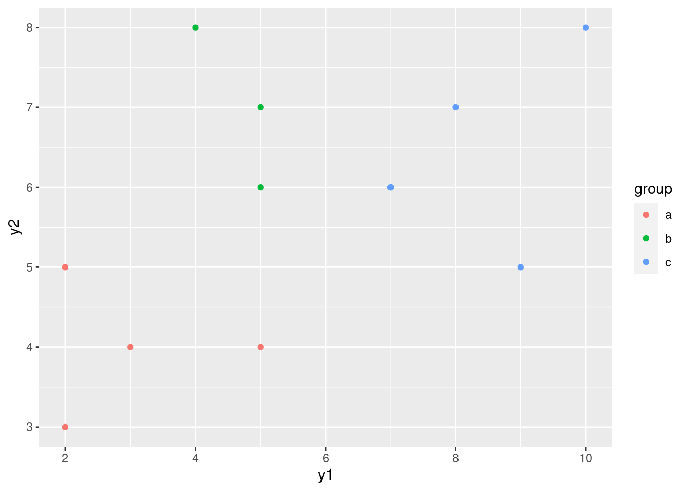
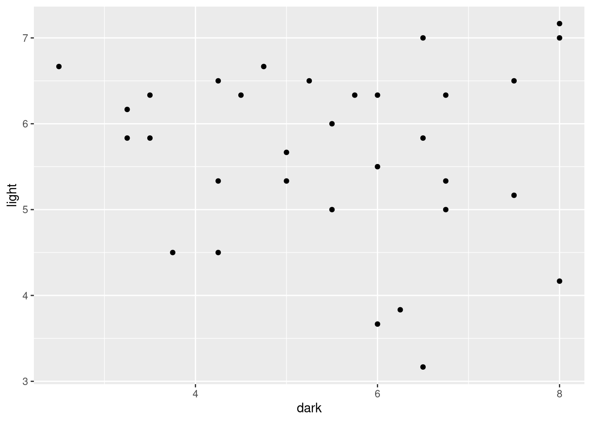
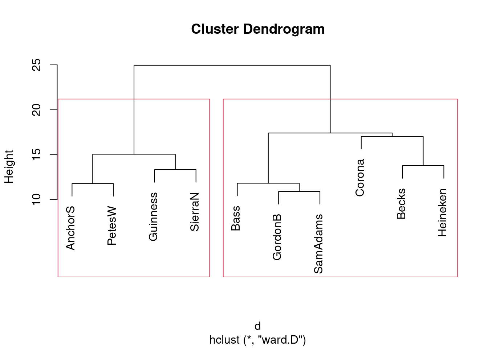
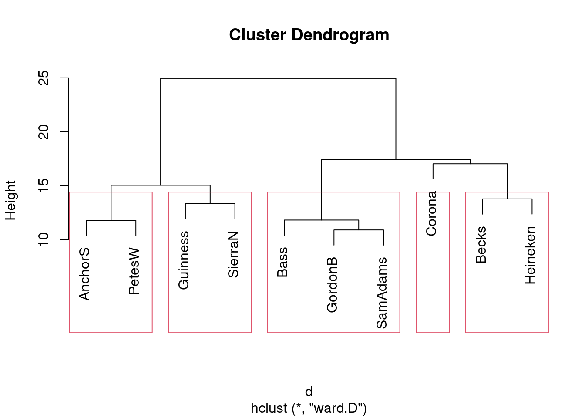
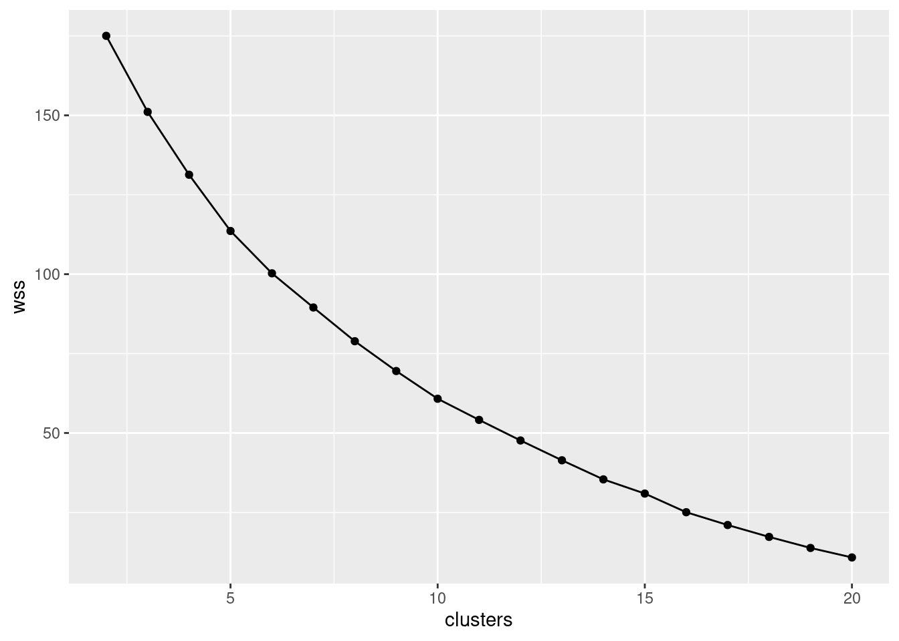
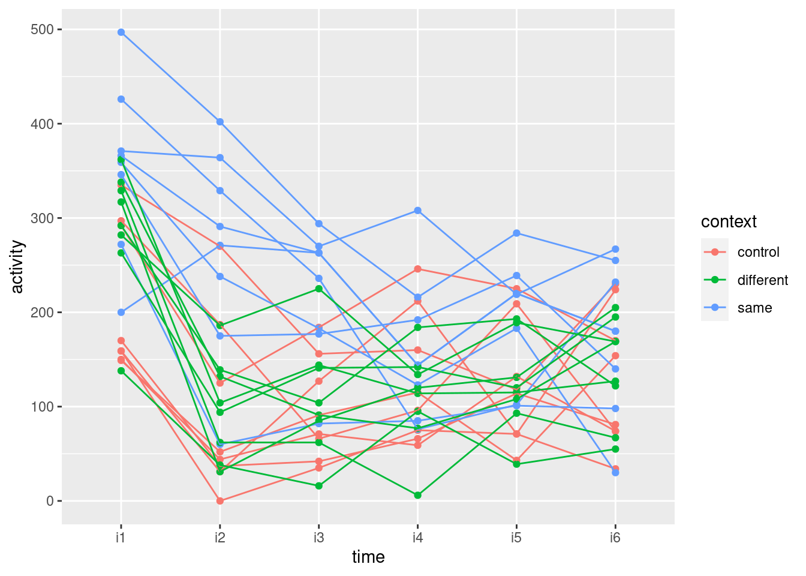

Chapter 26 Cluster analysis
Packages for this chapter:
26.1 Sites on the sea bed
Biologists investigate the prevalence of
species of organism by sampling sites where the organisms might be,
taking a “grab” from the site, and sending the grabs to a laboratory
for analysis. The data in this question come from the sea bed. There
were 30 sites, labelled s1 through s30. At each
site, five species of organism, labelled a through
e, were of interest; the data shown in those columns of the
data set were the number of organisms of that species identified in
the grab from that site. There are some other columns in the
(original) data set that will not concern us. Our interest is in
seeing which sites are similar to which other sites, so that a cluster
analysis will be suitable.
When the data are counts of different species, as they are here, biologists often measure the dissimilarity in species prevalence profiles between two sites using something called the Bray-Curtis dissimilarity. It is not important to understand this for this question (though I explain it in my solutions). I calculated the Bray-Curtis dissimilarity between each pair of sites and stored the results in link.
- Read in the dissimilarity data and check that you have 30 rows and 30 columns of dissimilarities.
Solution
##
## ── Column specification ──────────────────────────────────────────────────────────────────
## cols(
## .default = col_double()
## )
## ℹ Use `spec()` for the full column specifications.Check. The columns are labelled with
the site names. (As I originally set this question, the data file was
read in with read.csv instead, and the site names were read
in as row names as well: see discussion elsewhere about row names. But
in the tidyverse we don’t have row names.)
- Create a distance object out of your dissimilarities, bearing in mind that the values are distances (well, dissimilarities) already.
Solution
This one needs as.dist to convert already-distances into
a dist object. (dist would have
calculated distances from things that were not
distances/dissimilarities yet.)
If you check, you’ll see that the site names are being used to label rows and columns of the dissimilarity matrix as displayed. The lack of row names is not hurting us.
- Fit a cluster analysis using single-linkage, and display a dendrogram of the results.
Solution
This:

This is a base-graphics plot, it not having any of the nice
ggplot things. But it does the job.
Single-linkage tends to produce “stringy” clusters, since the individual being added to a cluster only needs to be close to one thing in the cluster. Here, that manifests itself in sites getting added to clusters one at a time: for example, sites 25 and 26 get joined together into a cluster, and then in sequence sites 6, 16, 27, 30 and 22 get joined on to it (rather than any of those sites being formed into clusters first).
You might
Conceivably. be wondering what else is in that
hclust object, and what it’s good for. Let’s take a look:
## List of 7
## $ merge : int [1:29, 1:2] -3 -25 -6 -9 -28 -16 -27 -1 -30 -24 ...
## $ height : num [1:29] 0.1 0.137 0.152 0.159 0.159 ...
## $ order : int [1:30] 21 14 29 23 15 1 19 18 2 7 ...
## $ labels : chr [1:30] "s1" "s2" "s3" "s4" ...
## $ method : chr "single"
## $ call : language hclust(d = d, method = "single")
## $ dist.method: NULL
## - attr(*, "class")= chr "hclust"You might guess that labels contains the names of the sites,
and you’d be correct. Of the other things, the most interesting are
merge and height. Let’s display them side by side:
## height
## [1,] 0.1000000 -3 -20
## [2,] 0.1369863 -25 -26
## [3,] 0.1523179 -6 2
## [4,] 0.1588785 -9 -12
## [5,] 0.1588785 -28 4
## [6,] 0.1617647 -16 3
## [7,] 0.1633987 -27 6
## [8,] 0.1692308 -1 -19
## [9,] 0.1807229 -30 7
## [10,] 0.1818182 -24 5
## [11,] 0.1956522 -5 10
## [12,] 0.2075472 -15 8
## [13,] 0.2083333 -14 -29
## [14,] 0.2121212 -7 11
## [15,] 0.2142857 -11 1
## [16,] 0.2149533 -2 14
## [17,] 0.2191781 -18 16
## [18,] 0.2205882 -22 9
## [19,] 0.2285714 17 18
## [20,] 0.2307692 12 19
## [21,] 0.2328767 -10 15
## [22,] 0.2558140 20 21
## [23,] 0.2658228 -23 22
## [24,] 0.2666667 13 23
## [25,] 0.3023256 -4 -13
## [26,] 0.3333333 24 25
## [27,] 0.3571429 -21 26
## [28,] 0.4285714 -8 -17
## [29,] 0.6363636 27 28height is the vertical scale of the dendrogram. The first
height is 0.1, and if you look at the bottom of the dendrogram, the
first sites to be joined together are sites 3 and 20 at height 0.1
(the horizontal bar joining sites 3 and 20 is what you are looking
for). In the last two columns, which came from merge, you see
what got joined together, with negative numbers meaning individuals
(individual sites), and positive numbers meaning clusters formed
earlier. So, if you look at the third line, at height 0.152, site 6
gets joined to the cluster formed on line 2, which (looking back) we
see consists of sites 25 and 26. Go back now to the dendrogram; about
\({3\over 4}\) of the way across, you’ll see sites 25 and 26 joined
together into a cluster, and a little higher up the page, site 6 joins
that cluster.
I said that single linkage produces stringy clusters, and the way that
shows up in merge is that you often get an individual site
(negative number) joined onto a previously-formed cluster (positive
number). This is in contrast to Ward’s method, below.
- Now fit a cluster analysis using Ward’s method, and display a dendrogram of the results.
Solution
Same thing, with small changes. The hard part is getting the name
of the method right:

The site numbers were a bit close together, so I printed them out
smaller than usual size (which is what the cex and a number
less than 1 is doing: 70% of normal size).
This is base-graphics code, which I learned a long time ago. There are a lot of options with weird names that are hard to remember, and that are sometimes inconsistent with each other. There is a package ggdendro that makes nice ggplot dendrograms, and another called dendextend that does all kinds of stuff with dendrograms. I decided that it wasn’t worth the trouble of teaching you (and therefore me) ggdendro, since the dendrograms look much the same.
This time, there is a greater tendency for sites to be joined into
small clusters first, then these small clusters are joined
together. It’s not perfect, but there is a greater tendency for it to
happen here.
This shows up in merge too:
## [,1] [,2]
## [1,] -3 -20
## [2,] -25 -26
## [3,] -9 -12
## [4,] -28 3
## [5,] -1 -19
## [6,] -6 2
## [7,] -14 -29
## [8,] -5 -7
## [9,] -18 -24
## [10,] -27 6
## [11,] -16 -22
## [12,] -2 4
## [13,] -30 10
## [14,] -15 5
## [15,] -23 8
## [16,] -4 -13
## [17,] -11 1
## [18,] 9 12
## [19,] -10 17
## [20,] -8 -17
## [21,] 11 13
## [22,] -21 15
## [23,] 7 22
## [24,] 14 19
## [25,] 16 24
## [26,] 18 21
## [27,] 20 23
## [28,] 26 27
## [29,] 25 28There are relatively few instances of a site being joined to a cluster of sites. Usually, individual sites get joined together (negative with a negative, mainly at the top of the list), or clusters get joined to clusters (positive with positive, mainly lower down the list).
- * On the Ward’s method clustering, how many clusters would you choose to divide the sites into? Draw rectangles around those clusters.
Solution
You may need to draw the plot again. In any case, a second line of code draws the rectangles. I think three clusters is good, but you can have a few more than that if you like:

What I want to see is a not-unreasonable choice of number of clusters (I think you could go up to about six), and then a depiction of that number of clusters on the plot. This is six clusters:

In all your plots, the cex is optional, but you can compare
the plots with it and without it and see which you prefer.
Looking at this, even seven clusters might work, but I doubt you’d want to go beyond that. The choice of the number of clusters is mainly an aesthetic This, I think, is the British spelling, with the North American one being esthetic. My spelling is where the aes in a ggplot comes from. decision.
- * The original data is in
link. Read in the
original data and verify that you again have 30 sites, variables
called
athrougheand some others.
Solution
This is really a very cheap two points:
##
## ── Column specification ──────────────────────────────────────────────────────────────────
## cols(
## site = col_character(),
## a = col_double(),
## b = col_double(),
## c = col_double(),
## d = col_double(),
## e = col_double(),
## depth = col_double(),
## pollution = col_double(),
## temp = col_double(),
## sediment = col_character()
## )30 observations of 10 variables, including a through
e. Check.
I gave this a weird name so that it didn’t overwrite my original
seabed, the one I turned into a distance object, though I
don’t think I really needed to worry.
These data came from link, If you are a soccer fan, you might recognize BBVA as a former sponsor of the top Spanish soccer league, La Liga BBVA (as it was). BBVA is a Spanish bank that also has a Foundation that published this book. from which I also got the definition of the Bray-Curtis dissimilarity that I calculated for you. The data are in Exhibit 1.1 of that book.
- Go back to your Ward method dendrogram with the red rectangles and find two sites in the same cluster. Display the original data for your two sites and see if you can explain why they are in the same cluster. It doesn’t matter which two sites you choose; the grader will merely check that your results look reasonable.
Solution
I want my two sites to be very similar, so I’m looking at two sites
that were joined into a cluster very early on, sites s3 and
s20. As I said, I don’t mind which ones you pick, but being
in the same cluster will be easiest to justify if you pick sites
that were joined together early.
Then you need to display just those rows of the original data (that
you just read in), which is a filter with an “or” in it:
I think this odd-looking thing also works:
I’ll also take displaying the lines one at a time, though it is easier to compare them if they are next to each other.
Why are they in the same cluster? To be similar (that is, have a low
dissimilarity), the values of a through e should be
close together. Here, they certainly are: a and e
are both zero for both sites, and b, c and
d are around 10 for both sites. So I’d call that similar.
You will probably pick a different pair of sites, and thus your detailed discussion will differ from mine, but the general point of it should be the same: pick a pair of sites in the same cluster (1 mark), display those two rows of the original data (1 mark), some sensible discussion of how the sites are similar (1 mark). As long as you pick two sites in the same one of your clusters, I don’t mind which ones you pick. The grader will check that your two sites were indeed in the same one of your clusters, then will check that you do indeed display those two sites from the original data.
What happens if you pick sites from different clusters? Let’s pick two very dissimilar ones, sites 4 and 7 from opposite ends of my dendrogram:
Site s4 has no a or b at all, and site
s7 has quite a few; site s7 has no c at
all, while site s4 has a lot. These are very different sites.
Extra: now that you’ve seen what the original data look like, I should
explain how I got the Bray-Curtis dissimilarities. As I said, only the
counts of species a through e enter into the
calculation; the other variables have nothing to do with it.
Let’s simplify matters by pretending that we have only two species (we can call them A and B), and a vector like this:
which says that we have 10 organisms of species A and 3 of species B at a site. This is rather similar to this site:
but very different from this site:
The way you calculate the Bray-Curtis dissimilarity is to take the absolute difference of counts of organisms of each species:
## [1] 2 1and add those up:
## [1] 3and then divide by the total of all the frequencies:
## [1] 0.12The smaller this number is, the more similar the sites are. So you
might imagine that v1 and v3 would be more dissimilar:
## [1] 0.7and so it is. The scaling of the Bray-Curtis dissimilarity is that the smallest it can be is 0, if the frequencies of each of the species are exactly the same at the two sites, and the largest it can be is 1, if one site has only species A and the other has only species B. (I’ll demonstrate that in a moment.) You might imagine that we’ll be doing this calculation a lot, and so we should define a function to automate it. Hadley Wickham (in “R for Data Science”) says that you should copy and paste some code (as I did above) no more than twice; if you need to do it again, you should write a function instead. The thinking behind this is if you copy and paste and change something (like a variable name), you’ll need to make the change everywhere, and it’s so easy to miss one. So, my function is (copying and pasting my code from above into the body of the function, which is Wickham-approved since it’s only my second time):
Let’s test it on my made-up sites, making up one more:
## [1] 0.12## [1] 0.7## [1] 0## [1] 1These all check out. The first two are repeats of the ones we did
before. The third one says that if you calculate Bray-Curtis for two
sites with the exact same frequencies all the way along, you get the
minimum value of 0; the fourth one says that when site v3
only has species B and site v4 only has species A, you get
the maximum value of 1.
But note this:
## [1] 8 4## [1] 16 8## [1] 0.3333333You might say that v2 and 2*v2 are the same
distribution, and so they are, proportionately. But Bray-Curtis is
assessing whether the frequencies are the same (as opposed to
something like a chi-squared test that is assessing
proportionality).
You could make a table out of the sites and species, and use the test statistic from a chi-squared test as a measure of dissimilarity: the smallest it can be is zero, if the species counts are exactly proportional at the two sites. It doesn’t have an upper limit.
So far so good. Now we have to do this for the actual data. The first
issue
There are more issues. is that the data is some of the
row of the original data frame; specifically, it’s columns 2 through
6. For example, sites s3 and s20 of the original
data frame look like this:
and we don’t want to feed the whole of those into braycurtis,
just the second through sixth elements of them. So let’s write another
function that extracts the columns a through e of its
inputs for given rows, and passes those on to the braycurtis
that we wrote before. This is a little fiddly, but bear with me. The
input to the function is the data frame, then the two sites that we want:
First, though, what happens if filter site s3?
This is a one-row data frame, not a vector as our function expects. Do we need to worry about it? First, grab the right columns, so that we will know what our function has to do:
That leads us to this function, which is a bit repetitious, but for
two repeats I can handle it. I haven’t done anything about the fact
that x and y below are actually data frames:
braycurtis.spec <- function(d, i, j) {
d %>% filter(site == i) %>% select(a:e) -> x
d %>% filter(site == j) %>% select(a:e) -> y
braycurtis(x, y)
}The first time I did this, I had the filter and the
select in the opposite order, so I was neatly removing
the column I wanted to filter by before I did the
filter!
The first two lines pull out columns a through e of
(respectively) sites i and j.
If I were going to create more than two things like x and
y, I would have hived that off
into a separate function as well, but I didn’t.
Sites 3 and 20 were the two sites I chose before as being similar ones (in the same cluster). So the dissimilarity should be small:
## [1] 0.1and so it is. Is it about right? The c differ by 5, the
d differ by one, and the total frequency in both rows is
about 60, so the dissimilarity should be about \(6/60=0.1\), as it is
(exactly, in fact).
This, you will note, works. I think R has taken the attitude that it
can treat these one-row data frames as if they were vectors.
This is the cleaned-up version of my function. When I first wrote it,
I printed out x and y, so that I could
check that they were what I was expecting (they were).
I am a paid-up member of the print all the things school of debugging. You probably know how to do this better.
We have almost all the machinery we need. Now what we have to do is to
compare every site with every other site and compute the dissimilarity
between them. If you’re used to Python or another similar language,
you’ll recognize this as two loops, one inside the other. This can be done in R (and I’ll show you how), but I’d rather show you the Tidyverse way first.
The starting point is to make a vector containing all the sites, which is easier than you would guess:
## [1] "s1" "s2" "s3" "s4" "s5" "s6" "s7" "s8" "s9" "s10" "s11" "s12" "s13" "s14"
## [15] "s15" "s16" "s17" "s18" "s19" "s20" "s21" "s22" "s23" "s24" "s25" "s26" "s27" "s28"
## [29] "s29" "s30"Next, we need to make all possible pairs of sites, which we also know how to do:
Now, think about what to do in English first: “for each of the sites in site1, and for each of the sites in site2, taken in parallel, work out the Bray-Curtis distance.” This is, I hope,
making you think of rowwise:
(you might notice that this takes a noticeable time to run.)
This is a “long” data frame, but for the cluster analysis, we need a wide one with sites in rows and columns, so let’s create that:
That’s the data frame I shared with you.
The more Python-like way of doing it is a loop inside a loop. This
works in R, but it has more housekeeping and a few possibly unfamiliar
ideas. We are going to work with a matrix, and we access
elements of a matrix with two numbers inside square brackets, a row
number and a column number. We also have to initialize our matrix that
we’re going to fill with Bray-Curtis distances; I’ll fill it with \(-1\)
values, so that if any are left at the end, I’ll know I missed
something.
m <- matrix(-1, 30, 30)
for (i in 1:30) {
for (j in 1:30) {
m[i, j] <- braycurtis.spec(seabed.z, sites[i], sites[j])
}
}
rownames(m) <- sites
colnames(m) <- sites
head(m)## s1 s2 s3 s4 s5 s6 s7 s8
## s1 0.0000000 0.4567901 0.2962963 0.4666667 0.4769231 0.5221239 0.4545455 0.9333333
## s2 0.4567901 0.0000000 0.4814815 0.5555556 0.3478261 0.2285714 0.4146341 0.9298246
## s3 0.2962963 0.4814815 0.0000000 0.4666667 0.5076923 0.5221239 0.4909091 1.0000000
## s4 0.4666667 0.5555556 0.4666667 0.0000000 0.7857143 0.6923077 0.8695652 1.0000000
## s5 0.4769231 0.3478261 0.5076923 0.7857143 0.0000000 0.4193548 0.2121212 0.8536585
## s6 0.5221239 0.2285714 0.5221239 0.6923077 0.4193548 0.0000000 0.5087719 0.9325843
## s9 s10 s11 s12 s13 s14 s15 s16
## s1 0.3333333 0.4029851 0.3571429 0.3750000 0.5769231 0.6326531 0.2075472 0.8571429
## s2 0.2222222 0.4468085 0.5662651 0.2149533 0.6708861 0.4210526 0.3750000 0.4720000
## s3 0.4074074 0.3432836 0.2142857 0.3250000 0.6538462 0.6734694 0.3584906 0.7346939
## s4 0.6388889 0.3793103 0.5319149 0.5492958 0.3023256 0.8500000 0.4090909 0.9325843
## s5 0.1956522 0.5641026 0.3731343 0.3186813 0.7142857 0.2666667 0.4687500 0.5045872
## s6 0.2428571 0.5714286 0.5304348 0.2374101 0.6756757 0.5925926 0.5357143 0.2484076
## s17 s18 s19 s20 s21 s22 s23 s24
## s1 1.0000000 0.5689655 0.1692308 0.3333333 0.7333333 0.7346939 0.4411765 0.5714286
## s2 0.8620690 0.3146853 0.3695652 0.4022989 0.6666667 0.3760000 0.5368421 0.2432432
## s3 1.0000000 0.5344828 0.3230769 0.1000000 0.8222222 0.6326531 0.5294118 0.3809524
## s4 1.0000000 0.6635514 0.4642857 0.3333333 0.8333333 0.9325843 0.8644068 0.5200000
## s5 0.8095238 0.5118110 0.3947368 0.5211268 0.3571429 0.3761468 0.2658228 0.4105263
## s6 0.9111111 0.2571429 0.3870968 0.4621849 0.6730769 0.2993631 0.4488189 0.3006993
## s25 s26 s27 s28 s29 s30
## s1 0.7037037 0.6956522 0.6363636 0.3250000 0.4339623 0.6071429
## s2 0.3925926 0.3277311 0.3809524 0.2149533 0.3500000 0.3669065
## s3 0.6666667 0.6086957 0.6363636 0.5000000 0.4339623 0.5892857
## s4 0.9393939 0.9277108 0.9333333 0.5774648 0.5454545 0.8446602
## s5 0.5294118 0.4174757 0.3818182 0.3186813 0.3125000 0.4796748
## s6 0.1856287 0.1523179 0.2151899 0.2949640 0.5357143 0.2163743Because my loops work with site numbers and my function works with site names, I have to remember to refer to the site names when I call my function. I also have to supply row and column names (the site names).
That looks all right. Are all my Bray-Curtis distances between 0 and 1? I can smoosh my matrix into a vector and summarize it:
## Min. 1st Qu. Median Mean 3rd Qu. Max.
## 0.0000 0.3571 0.5023 0.5235 0.6731 1.0000All the dissimilarities are correctly between 0 and 1. We can also check the one we did before:
or
## [1] 0.1Check.
- Obtain the cluster memberships for each site, for your
preferred number of clusters from part (here). Add a
column to the original data that you read in, in part
(here), containing those cluster memberships, . Obtain a plot that will enable you to assess the
relationship between those clusters and
pollution. (Once you have the cluster memberships, you can add them to the data frame and make the graph using a pipe.) What do you see?
Solution
Start by getting the clusters with cutree. I’m going with 3
clusters, though you can use the number of clusters you chose
before. (This is again making the grader’s life a misery, but her
instructions from me are to check that you have done something
reasonable, with the actual answer being less important.)
## s1 s2 s3 s4 s5 s6 s7 s8 s9 s10 s11 s12 s13 s14 s15 s16 s17 s18 s19 s20 s21 s22
## 1 2 1 1 3 2 3 3 2 1 1 2 1 3 1 2 3 2 1 1 3 2
## s23 s24 s25 s26 s27 s28 s29 s30
## 3 2 2 2 2 2 3 2Now, we add that to the original data, the data frame I called
seabed.z, and make a plot. The best one is a boxplot:
seabed.z %>%
mutate(cluster = factor(cluster)) %>%
ggplot(aes(x = cluster, y = pollution)) + geom_boxplot()
The clusters differ substantially in terms of the amount of pollution, with my cluster 1 being highest and my cluster 2 being lowest. (Cluster 3 has a low outlier.)
Any sensible plot will do here. I think boxplots are the best, but you could also do something like vertically-faceted histograms:
seabed.z %>%
mutate(cluster = factor(cluster)) %>%
ggplot(aes(x = pollution)) + geom_histogram(bins = 8) +
facet_grid(cluster ~ .)
which to my mind doesn’t show the differences as dramatically. (The bins are determined from all the data together, so that each facet actually has fewer than 8 bins. You can see where the bins would be if they had any data in them.)
Here’s how 5 clusters looks:
## s1 s2 s3 s4 s5 s6 s7 s8 s9 s10 s11 s12 s13 s14 s15 s16 s17 s18 s19 s20 s21 s22
## 1 2 1 1 3 4 3 5 2 1 1 2 1 3 1 4 5 2 1 1 3 4
## s23 s24 s25 s26 s27 s28 s29 s30
## 3 2 4 4 4 2 3 4seabed.z %>%
mutate(cluster = factor(cluster)) %>%
ggplot(aes(x = cluster, y = pollution)) + geom_boxplot()
This time, the picture isn’t quite so clear-cut, but clusters 1 and 5 are the highest in terms of pollution and cluster 4 is the lowest. I’m guessing that whatever number of clusters you choose, you’ll see some differences in terms of pollution.
What is interesting is that pollution had nothing to
do with the original formation of the clusters: that was based only on
which species were found at each site. So, what we have shown here is that
the amount of pollution has some association with what species are found at a
site.
A way to go on with this is to use the clusters as “known groups”
and predict the cluster membership from depth,
pollution and temp using a discriminant
analysis. Then you could plot the sites, colour-coded by what cluster
they were in, and even though you had three variables, you could plot
it in two dimensions (or maybe even one dimension, depending how many
LD’s were important).
26.2 Dissimilarities between fruits
Consider the fruits apple, orange, banana, pear, strawberry, blueberry. We are going to work with these four properties of fruits:
has a round shape
Is sweet
Is crunchy
Is a berry
- Make a table with fruits as columns, and with rows “round shape”, “sweet”, “crunchy”, “berry”. In each cell of the table, put a 1 if the fruit has the property named in the row, and a 0 if it does not. (This is your opinion, and may not agree with mine. That doesn’t matter, as long as you follow through with whatever your choices were.)
Solution
Something akin to this:
Fruit Apple Orange Banana Pear Strawberry Blueberry
Round shape 1 1 0 0 0 1
Sweet 1 1 0 0 1 0
Crunchy 1 0 0 1 0 0
Berry 0 0 0 0 1 1
You’ll have to make a choice about “crunchy”. I usually eat pears before they’re fully ripe, so to me, they’re crunchy.
- We’ll define the dissimilarity between two fruits to be the number of qualities they disagree on. Thus, for example, the dissimilarity between Apple and Orange is 1 (an apple is crunchy and an orange is not, but they agree on everything else). Calculate the dissimilarity between each pair of fruits, and make a square table that summarizes the results. (To save yourself some work, note that the dissimilarity between a fruit and itself must be zero, and the dissimilarity between fruits A and B is the same as that between B and A.) Save your table of dissimilarities into a file for the next part.
Solution
I got this, by counting them:
Fruit Apple Orange Banana Pear Strawberry Blueberry
Apple 0 1 3 2 3 3
Orange 1 0 2 3 2 2
Banana 3 2 0 1 2 2
Pear 2 3 1 0 3 3
Strawberry 3 2 2 3 0 2
Blueberry 3 2 2 3 2 0
I copied this into a file fruits.txt. Note that (i) I
have aligned my columns, so that I will be able to use
read_table later, and (ii) I have given the first column
a name, since read_table wants the same number of column
names as columns.
Extra: yes, you can do this in R too. We’ve seen some of the tricks before.
Let’s start by reading in my table of fruits and properties, which I saved in link:
##
## ── Column specification ──────────────────────────────────────────────────────────────────
## cols(
## Property = col_character(),
## Apple = col_double(),
## Orange = col_double(),
## Banana = col_double(),
## Pear = col_double(),
## Strawberry = col_double(),
## Blueberry = col_double()
## )We don’t need the first column, so we’ll get rid of it:
The loop way is the most direct. We’re going to be looking at
combinations of fruits and other fruits, so we’ll need two loops one
inside the other. It’s easier for this to work with column numbers,
which here are 1 through 6, and we’ll make a matrix m with
the dissimilarities in it, which we have to initialize first. I’ll
initialize it to a \(6\times 6\) matrix of -1, since the final
dissimilarities are 0 or bigger, and this way I’ll know if I forgot
anything.
Here’s where we are at so far:
fruit_m <- matrix(-1, 6, 6)
for (i in 1:6) {
for (j in 1:6) {
fruit_m[i, j] <- 3 # dissim between fruit i and fruit j
}
}This, of course, doesn’t run yet. The sticking point is how to calculate the dissimilarity between two columns. I think that is a separate thought process that should be in a function of its own. The inputs are the two column numbers, and a data frame to get those columns from:
dissim <- function(i, j, d) {
x <- d %>% select(i)
y <- d %>% select(j)
sum(x != y)
}
dissim(1, 2, fruit2)## Note: Using an external vector in selections is ambiguous.
## ℹ Use `all_of(i)` instead of `i` to silence this message.
## ℹ See <https://tidyselect.r-lib.org/reference/faq-external-vector.html>.
## This message is displayed once per session.## Note: Using an external vector in selections is ambiguous.
## ℹ Use `all_of(j)` instead of `j` to silence this message.
## ℹ See <https://tidyselect.r-lib.org/reference/faq-external-vector.html>.
## This message is displayed once per session.## [1] 1Apple and orange differ by one (not being crunchy). The process is:
grab the \(i\)-th column and call it x, grab the \(j\)-th column
and call it y. These are two one-column data frames with four
rows each (the four properties). x!=y goes down the rows, and
for each one gives a TRUE if they’re different and a
FALSE if they’re the same. So x!=y is a collection
of four T-or-F values. This seems backwards, but I was thinking of
what we want to do: we want to count the number of different
ones. Numerically, TRUE counts as 1 and FALSE as 0,
so we should make the thing we’re counting (the different ones) come
out as TRUE. To count the number of TRUEs (1s), add
them up.
That was a complicated thought process, so it was probably wise to write a function to do it. Now, in our loop, we only have to call the function (having put some thought into getting it right):
fruit_m <- matrix(-1, 6, 6)
for (i in 1:6) {
for (j in 1:6) {
fruit_m[i, j] <- dissim(i, j, fruit2)
}
}
fruit_m## [,1] [,2] [,3] [,4] [,5] [,6]
## [1,] 0 1 3 2 3 3
## [2,] 1 0 2 3 2 2
## [3,] 3 2 0 1 2 2
## [4,] 2 3 1 0 3 3
## [5,] 3 2 2 3 0 2
## [6,] 3 2 2 3 2 0The last step is re-associate the fruit names with this matrix. This
is a matrix so it has a rownames and a
colnames. We set both of those, but first we have to get the
fruit names from fruit2:
fruit_names <- names(fruit2)
rownames(fruit_m) <- fruit_names
colnames(fruit_m) <- fruit_names
fruit_m## Apple Orange Banana Pear Strawberry Blueberry
## Apple 0 1 3 2 3 3
## Orange 1 0 2 3 2 2
## Banana 3 2 0 1 2 2
## Pear 2 3 1 0 3 3
## Strawberry 3 2 2 3 0 2
## Blueberry 3 2 2 3 2 0This is good to go into the cluster analysis (happening later).
There is a tidyverse way to do this also. It’s actually a lot
like the loop way in its conception, but the coding looks
different. We start by making all combinations of the fruit names with
each other, which is crossing:
Now, we want a function that, given any two fruit names, works out the dissimilarity between them. A happy coincidence is that we can use the function we had before, unmodified! How? Take a look:
dissim <- function(i, j, d) {
x <- d %>% select(i)
y <- d %>% select(j)
sum(x != y)
}
dissim("Apple", "Orange", fruit2)## [1] 1select can take a column number or a column name, so
that running it with column names gives the right answer.
Now, we want to run this function for each of the pairs in
combos. This is rowwise, since our function takes only one fruit and one other fruit at a time, not all of them at once:
This would work just as well using fruit1, with the column of properties, rather than
fruit2, since we are picking out the columns by name rather
than number.
To make this into something we can turn into a dist object
later, we need to pivot-wider the column other to make a
square array:
combos %>%
rowwise() %>%
mutate(dissim = dissim(fruit, other, fruit2)) %>%
pivot_wider(names_from = other, values_from = dissim) -> fruit_spread
fruit_spreadDone!
- Do a hierarchical cluster analysis using complete linkage. Display your dendrogram.
Solution
First, we need to take one of our matrices of dissimilarities
and turn it into a dist object. Since I asked you to
save yours into a file, let’s start from there. Mine is aligned
columns:
##
## ── Column specification ──────────────────────────────────────────────────────────────────
## cols(
## fruit = col_character(),
## Apple = col_double(),
## Orange = col_double(),
## Banana = col_double(),
## Pear = col_double(),
## Strawberry = col_double(),
## Blueberry = col_double()
## )Then turn it into a dist object. The first step is to take
off the first column, since as.dist can get the names from
the columns:
## Apple Orange Banana Pear Strawberry
## Orange 1
## Banana 3 2
## Pear 2 3 1
## Strawberry 3 2 2 3
## Blueberry 3 2 2 3 2If you forget to take off the first column, this happens:
## Warning in storage.mode(m) <- "numeric": NAs introduced by coercion## Warning in as.dist.default(dissims): non-square matrix## Error in dimnames(df) <- if (is.null(labels)) list(seq_len(size), seq_len(size)) else list(labels, : length of 'dimnames' [1] not equal to array extentThe key thing here is “non-square matrix”: you have one more column than you have rows, since you have a column of fruit names.
This one is as.dist since you already have dissimilarities
and you want to arrange them into the right type of
thing. dist is for calculating dissimilarities, which
we did before, so we don’t want to do that now.
Now, after all that work, the actual cluster analysis and dendrogram:

- How many clusters, of what fruits, do you seem to have? Explain briefly.
Solution
I reckon I have three clusters: strawberry and blueberry in one, apple and orange in the second, and banana and pear in the third. (If your dissimilarities were different from mine, your dendrogram will be different also.)
- Pick a pair of clusters (with at least 2 fruits in each) from your dendrogram. Verify that the complete-linkage distance on your dendrogram is correct.
Solution
I’ll pick strawberry-blueberry and and apple-orange. I’ll arrange the dissimilarities like this:
apple orange
strawberry 3 2
blueberry 3 2
The largest of those is 3, so that’s the complete-linkage
distance. That’s also what the dendrogram says.
(Likewise, the smallest of those is 2, so 2 is the
single-linkage distance.) That is to say, the largest distance or
dissimilarity
from anything in one cluster to anything in the other is 3, and
the smallest is 2.
I don’t mind which pair of clusters you take, as long as you spell
out the dissimilarity (distance) between each fruit in each
cluster, and take the maximum of those. Besides, if your
dissimilarities are different from mine, your complete-linkage
distance could be different from mine also. The grader will have
to use her judgement!
That’s two cups of coffee I owe the grader now.
The important point is that you assess the dissimilarities between
fruits in one cluster and fruits in the other. The dissimilarities
between fruits in the same cluster don’t enter into it xxx.
I now have a mental image of John Cleese saying it don’t enter into it in the infamous Dead Parrot sketch, https://www.youtube.com/watch?v=vnciwwsvNcc. Not to mention How to defend yourself against an assailant armed with fresh fruit, https://www.youtube.com/watch?v=4JgbOkLdRaE.
As it happens, all my complete-linkage distances between clusters
(of at least 2 fruits) are 3. The single-linkage ones are
different, though:
All the single-linkage cluster distances are 2. (OK, so this wasn’t a very interesting example, but I wanted to give you one where you could calculate what was going on.)
26.3 Similarity of species
Two scientists assessed the dissimilarity between a number of species by recording the number of positions in the protein molecule cytochrome-\(c\) where the two species being compared have different amino acids. The dissimilarities that they recorded are in link.
- Read the data into a data frame and take a look at it.
Solution
Nothing much new here:
##
## ── Column specification ──────────────────────────────────────────────────────────────────
## cols(
## what = col_character(),
## Man = col_double(),
## Monkey = col_double(),
## Horse = col_double(),
## Pig = col_double(),
## Pigeon = col_double(),
## Tuna = col_double(),
## Mould = col_double(),
## Fungus = col_double()
## )This is a square array of dissimilarities between the eight species.
The data set came from the 1960s, hence the use of “Man” rather than
“human”. It probably also came from the UK, judging by the spelling
of Mould.
(I gave the first column the name what so that you could
safely use species for the whole data frame.)
- Bearing in mind that the values you read in are
already dissimilarities, convert them into a
distobject suitable for running a cluster analysis on, and display the results. (Note that you need to get rid of any columns that don’t contain numbers.)
Solution
The point here is that the values you have are already
dissimilarities, so no conversion of the numbers is required. Thus
this is a job for as.dist, which merely changes how it
looks. Use a pipeline to get rid of the first column first:
## Man Monkey Horse Pig Pigeon Tuna Mould
## Monkey 1
## Horse 17 16
## Pig 13 12 5
## Pigeon 16 15 16 13
## Tuna 31 32 27 25 27
## Mould 63 62 64 64 59 72
## Fungus 66 65 68 67 66 69 61This doesn’t display anything that it doesn’t need to: we know that the dissimilarity between a species and itself is zero (no need to show that), and that the dissimilarity between B and A is the same as between A and B, so no need to show everything twice. It might look as if you are missing a row and a column, but one of the species (Fungus) appears only in a row and one of them (Man) only in a column.
This also works, to select only the numerical columns:
## Man Monkey Horse Pig Pigeon Tuna Mould
## Monkey 1
## Horse 17 16
## Pig 13 12 5
## Pigeon 16 15 16 13
## Tuna 31 32 27 25 27
## Mould 63 62 64 64 59 72
## Fungus 66 65 68 67 66 69 61Extra: data frames officially have an attribute called “row names”,
that is displayed where the row numbers display, but which isn’t
actually a column of the data frame. In the past, when we used
read.table with a dot, the first column of data read in from
the file could be nameless (that is, you could have one more column of
data than you had column names) and the first column would be treated
as row names. People used row names for things like identifier
variables. But row names have this sort of half-existence, and when
Hadley Wickham designed the tidyverse, he decided not to use
row names, taking the attitude that if it’s part of the data, it
should be in the data frame as a genuine column. This means that when
you use a read_ function, you have to have exactly as many
column names as columns.
For these data, I previously had the column here called
what as row names, and as.dist automatically got rid
of the row names when formatting the distances. Now, it’s a
genuine column, so I have to get rid of it before running
as.dist. This is more work, but it’s also more honest, and
doesn’t involve thinking about row names at all. So, on balance, I
think it’s a win.
- Run a cluster analysis using single-linkage and obtain a dendrogram.
Solution
Something like this:

- Run a cluster analysis using Ward’s method and obtain a dendrogram.
Solution
Not much changes here in the code, but the result is noticeably different:

Don’t forget to take care with the method: it has to be
ward in lowercase (even though it’s someone’s name) followed
by a D in uppercase.
- Describe how the two dendrograms from the last two parts look different.
Solution
This is (as ever with this kind of thing) a judgement call. Your job is to come up with something reasonable. For myself, I was thinking about how single-linkage tends to produce “stringy” clusters that join single objects (species) onto already-formed clusters. Is that happening here? Apart from the first two clusters, man and monkey, horse and pig, everything that gets joined on is a single species joined on to a bigger cluster, including mould and fungus right at the end. Contrast that with the output from Ward’s method, where, for the most part, groups are formed first and then joined onto other groups. For example, in Ward’s method, mould and fungus are joined earlier, and also the man-monkey group is joined to the pigeon-horse-pig group. Tuna is an exception, but usually Ward tends to join fairly dissimilar things that are nonetheless more similar to each other than to anything else. This is like Hungarian and Finnish in the example in class: they are very dissimilar languages, but they are more similar to each other than to anything else. You might prefer to look at the specifics of what gets joined. I think the principal difference from this angle is that mould and fungus get joined together (much) earlier in Ward. Also, pigeon gets joined to horse and pig first under Ward, but after those have been joined to man and monkey under single-linkage. This is also a reasonable kind of observation.
- Looking at your clustering for Ward’s method, what seems to be a sensible number of clusters? Draw boxes around those clusters.
Solution
Pretty much any number of clusters bigger than 1 and smaller than
8 is ok here, but I would prefer to see something between 2 and
5, because a number of clusters of that sort offers (i) some
insight (“these things are like these other things”) and (ii) a
number of clusters of that sort is supported by the data.
To draw those clusters, you need rect.hclust, and
before that you’ll need to plot the cluster object again. For 2
clusters, that would look like this:

This one is “mould and fungus vs. everything else”. (My red boxes seem to have gone off the side, sorry.)
Or we could go to the other end of the scale:

Five is not really an insightful number of clusters with 8 species, but it seems to correspond (for me at least) with a reasonable division of these species into “kinds of living things”. That is, I am bringing some outside knowledge into my number-of-clusters division.
- List which cluster each species is in, for your preferred number of clusters (from Ward’s method).
Solution
This is cutree. For 2 clusters it would be this:
## Man Monkey Horse Pig Pigeon Tuna Mould Fungus
## 1 1 1 1 1 1 2 2For 5 it would be this:
## Man Monkey Horse Pig Pigeon Tuna Mould Fungus
## 1 1 2 2 2 3 4 5and anything in between is in between.
These ones came out sorted, so there is no need to sort them (so you don’t need the methods of the next question).
26.4 Rating beer
Thirty-two students each rated 10 brands of beer:
Anchor Steam
Bass
Beck’s
Corona
Gordon Biersch
Guinness
Heineken
Pete’s Wicked Ale
Sam Adams
Sierra Nevada
The ratings are on a scale of 1 to 9, with a higher rating being better. The data are in link. I abbreviated the beer names for the data file. I hope you can figure out which is which.
- Read in the data, and look at the first few rows.
Solution
Data values are aligned in columns, but the column headers are
not aligned with them, so read_table2:
##
## ── Column specification ──────────────────────────────────────────────────────────────────
## cols(
## student = col_character(),
## AnchorS = col_double(),
## Bass = col_double(),
## Becks = col_double(),
## Corona = col_double(),
## GordonB = col_double(),
## Guinness = col_double(),
## Heineken = col_double(),
## PetesW = col_double(),
## SamAdams = col_double(),
## SierraN = col_double()
## )32 rows (students), 11 columns (10 beers, plus a column of student IDs). All seems to be kosher. If beer can be kosher. I investigated. It can; in fact, I found a long list of kosher beers that included Anchor Steam.
- The researcher who collected the data wants to see which
beers are rated similarly to which other beers. Try to create a
distance matrix from these data and explain why it didn’t do what
you wanted. (Remember to get rid of the
studentcolumn first.)
Solution
The obvious thing is to feed these ratings into dist
(we are creating distances rather than re-formatting
things that are already distances). We need to skip the first
column, since those are student identifiers:
## 'dist' num [1:496] 9.8 8.49 6.56 8.89 8.19 ...
## - attr(*, "Size")= int 32
## - attr(*, "Diag")= logi FALSE
## - attr(*, "Upper")= logi FALSE
## - attr(*, "method")= chr "euclidean"
## - attr(*, "call")= language dist(x = .)The 496 distances are:
## [1] 496the number of ways of choosing 2 objects out of 32, when order does
not matter.
Feel free to be offended by my choice of the letter d to
denote both data frames (that I didn’t want to give a better name to)
and dissimilarities in dist objects.
You can look at the whole thing if you like, though it is rather
large. A dist object is stored internally as a long vector
(here of 496 values); it’s displayed as a nice triangle. The clue here
is the thing called Size, which indicates that we have a
\(32\times 32\) matrix of distances between the 32 students, so
that if we were to go on and do a cluster analysis based on this
d, we’d get a clustering of the students rather than
of the beers, as we want. (If you just print out d,
you’ll see that is of distances between 32 (unlabelled) objects, which
by inference must be the 32 students.)
It might be interesting to do a cluster analysis of the 32 students (it would tell you which of the students have similar taste in beer), but that’s not what we have in mind here.
- The R function
t()transposes a matrix: that is, it interchanges rows and columns. Feed the transpose of your read-in beer ratings intodist. Does this now give distances between beers?
Solution
Again, omit the first column. The pipeline code looks a bit weird:
so you should feel free to do it in a couple of steps. This way shows that you can also refer to columns by number:
Either way gets you to the same place:
## AnchorS Bass Becks Corona GordonB Guinness Heineken PetesW SamAdams
## Bass 15.19868
## Becks 16.09348 13.63818
## Corona 20.02498 17.83255 17.54993
## GordonB 13.96424 11.57584 14.42221 13.34166
## Guinness 14.93318 13.49074 16.85230 20.59126 14.76482
## Heineken 20.66398 15.09967 13.78405 14.89966 14.07125 18.54724
## PetesW 11.78983 14.00000 16.37071 17.72005 11.57584 14.28286 19.49359
## SamAdams 14.62874 11.61895 14.73092 14.93318 10.90871 15.90597 14.52584 14.45683
## SierraN 12.60952 15.09967 17.94436 16.97056 11.74734 13.34166 19.07878 13.41641 12.12436There are 10 beers with these names, so this is good.
- Try to explain briefly why I used
as.distin the class example (the languages one) butdisthere. (Think about the form of the input to each function.)
Solution
as.dist is used if you already have
dissimilarities (and you just want to format them right), but
dist is used if you have
data on variables and you want to calculate
dissimilarities.
- * Obtain a clustering of the beers, using Ward’s method. Show the dendrogram.
Solution
This:

- What seems to be a sensible number of clusters? Which beers are in which cluster?
Solution
This is a judgement call. Almost anything sensible is reasonable. I personally think that two clusters is good, beers Anchor Steam, Pete’s Wicked Ale, Guinness and Sierra Nevada in the first, and Bass, Gordon Biersch, Sam Adams, Corona, Beck’s, and Heineken in the second. You could make a case for three clusters, splitting off Corona, Beck’s and Heineken into their own cluster, or even about 5 clusters as Anchor Steam, Pete’s Wicked Ale; Guinness, Sierra Nevada; Bass, Gordon Biersch, Sam Adams; Corona; Beck’s, Heineken.
The idea is to have a number of clusters sensibly smaller than the 10 observations, so that you are getting some actual insight. Having 8 clusters for 10 beers wouldn’t be very informative! (This is where you use your own knowledge about beer to help you rationalize your choice of number of clusters.)
Extra: as to why the clusters split up like this, I think the four beers on the left of my dendrogram are “dark” and the six on the right are “light” (in colour), and I would expect the students to tend to like all the beers of one type and not so much all the beers of the other type.
You knew I would have to investigate this, didn’t you? Let’s aim for a scatterplot of all the ratings for the dark beers, against the ones for the light beers.
Start with the data frame read in from the file:
The aim is to find the average rating for a dark beer and a light beer for each student, and then plot them against each other. Does a student who likes dark beer tend not to like light beer, and vice versa?
Let’s think about what to do first.
We need to: pivot_longer all the rating columns into one, labelled
by name of beer. Then create a variable that is dark
if we’re looking at one of the dark beers and light
otherwise. ifelse works like “if” in a spreadsheet: a
logical thing that is either true or false, followed by a value if
true and a value if false. There is a nice R command %in%
which is TRUE if the thing in the first variable is to be
found somewhere in the list of things given next (here, one of the
apparently dark beers). (Another way to do this, which will appeal to
you more if you like databases, is to create a second data frame with
two columns, the first being the beer names, and the second being
dark or light as appropriate for that beer. Then you
use a “left join” to look up beer type from beer name.)
Next, group by beer type within student. Giving two things to
group_by does it this way: the second thing within
(or “for each of”) the first.
Then calculate the mean rating within each group. This gives one column of students, one column of beer types, and one column of rating means.
Then we need to pivot_wider beer type
into two columns so that we can make a scatterplot of the mean ratings
for light and dark against
each other.
Finally, we make a scatterplot.
You’ll see the final version of this that worked, but rest assured that there were many intervening versions of this that didn’t!
I urge you to examine the chain one line at a time and see what each line does. That was how I debugged it.
Off we go:
beer %>%
pivot_longer(-student, names_to="name", values_to="rating") %>%
mutate(beer.type = ifelse(name %in%
c("AnchorS", "PetesW", "Guinness", "SierraN"), "dark", "light")) %>%
group_by(student, beer.type) %>%
summarize(mean.rat = mean(rating)) %>%
pivot_wider(names_from=beer.type, values_from=mean.rat) %>%
ggplot(aes(x = dark, y = light)) + geom_point()
After all that work, not really. There are some students who like light beer but not dark beer (top left), there is a sort of vague straggle down to the bottom right, where some students like dark beer but not light beer, but there are definitely students at the top right, who just like beer!
The only really empty part of this plot is the bottom left, which says that these students don’t hate both kinds of beer; they like either dark beer, or light beer, or both.
The reason a ggplot fits into this “workflow” is that the
first thing you feed into ggplot is a data frame, the one
created by the chain here. Because it’s in a pipeline,
you don’t have the
first thing on ggplot, so you can concentrate on the
aes (“what to plot”) and then the “how to plot it”.
Now back to your regularly-scheduled programming.
- Re-draw your dendrogram with your clusters indicated.
Solution
rect.hclust, with your chosen number of clusters:

Or if you prefer 5 clusters, like this:

Same idea with any other number of clusters. If you follow through with your preferred number of clusters from the previous part, I’m good.
- Obtain a K-means
clustering with 2 clusters.
If you haven’t gotten to K-means clustering yet, leave this and save it for later.
Note that you will need to use the (transposed)
original data, not the distances. Use a suitably large value of
nstart. (The data are ratings all on the same scale, so there is no need forscalehere. In case you were wondering.)
Solution
I used 20 for nstart. This is the pipe way:
Not everyone (probably) will get the same answer, because of the random nature of the procedure, but the above code should be good whatever output it produces.
- How many beers are in each cluster?
Solution
On mine:
## [1] 6 4You might get the same numbers the other way around.
- Which beers are in each cluster? You can do this
simply by obtaining the cluster memberships and using
sortas in the last question, or you can do it as I did in class by obtaining the names of the things to be clustered and picking out the ones of them that are in cluster 1, 2, 3, .)
Solution
The cluster numbers of each beer are these:
## AnchorS Bass Becks Corona GordonB Guinness Heineken PetesW SamAdams SierraN
## 2 1 1 1 1 2 1 2 1 2This is what is known in the business as a “named vector”: it has values (the cluster numbers) and each value has a name attached to it (the name of a beer).
Named vectors are handily turned into a data frame with enframe:
Or, to go back the other way, deframe:
## AnchorS Bass Becks Corona GordonB Guinness Heineken PetesW SamAdams SierraN
## 2 1 1 1 1 2 1 2 1 2or, give the columns better names and arrange them by cluster:
These happen to be the same clusters as in my 2-cluster solution using Ward’s method.
26.5 Clustering the Swiss bills
This question is about the Swiss bank counterfeit bills again. This time we’re going to ignore whether each bill is counterfeit or not, and see what groups they break into. Then, at the end, we’ll see whether cluster analysis was able to pick out the counterfeit ones or not.
- Read the data in again (just like last time), and look at the first few rows. This is just the same as before.
Solution
The data file was aligned in columns, so:
##
## ── Column specification ──────────────────────────────────────────────────────────────────
## cols(
## length = col_double(),
## left = col_double(),
## right = col_double(),
## bottom = col_double(),
## top = col_double(),
## diag = col_double(),
## status = col_character()
## )- The variables in this data frame are on different
scales. Standardize them so that they all have mean 0 and standard
deviation 1. (Don’t try to standardize the
statuscolumn!)
Solution
What kind of thing do we have?
## [1] "matrix" "array"so something like this is needed to display some of it (rather than all of it):
## length left right bottom top diag
## [1,] -0.2549435 2.433346 2.8299417 -0.2890067 -1.1837648 0.4482473
## [2,] -0.7860757 -1.167507 -0.6347880 -0.9120152 -1.4328473 1.0557460
## [3,] -0.2549435 -1.167507 -0.6347880 -0.4966762 -1.3083061 1.4896737
## [4,] -0.2549435 -1.167507 -0.8822687 -1.3273542 -0.3119759 1.3161027
## [5,] 0.2761888 -1.444496 -0.6347880 0.6801176 -3.6745902 1.1425316
## [6,] 2.1351516 1.879368 1.3450576 -0.2890067 -0.6855997 0.7953894- We are going to make a scree plot. First, calculate the total within-cluster SS for each number of clusters from 2 to 10.
Solution
When I first made this problem (some years ago),
I thought the obvious answer was a loop, but now that I’ve been
steeped in the Tidyverse a while, I think rowwise is much
clearer, so I’ll do that first.
Start by making a tibble that has one column called clusters containing the numbers 2 through 10:
Now, for each of these numbers of clusters, calculate the total within-cluster sum of squares for it (that number of clusters). To do that, think about how you’d do it for something like three clusters:
## [1] 576.1284and then use that within your rowwise:
tibble(clusters = 2:10) %>%
rowwise() %>%
mutate(wss = kmeans(swiss.s, clusters, nstart = 20)$tot.withinss) -> wssq
wssqAnother way is to save all the output from the kmeans, in a list-column, and then extract the thing you want, thus:
tibble(clusters = 2:10) %>%
rowwise() %>%
mutate(km = list(kmeans(swiss.s, clusters, nstart = 20))) %>%
mutate(wss = km$tot.withinss) -> wssq.2
wssq.2The output from kmeans is a collection of things, not just a single number, so when you create the column km, you need to put list around the kmeans, and then you’ll create a list-column. wss, on the other hand, is a single number each time, so no list is needed, and wss is an ordinary column of numbers, labelled dbl at the top.
The most important thing in both of these is to remember the rowwise. Without it, everything will go horribly wrong! This is because kmeans expects a single number for the number of clusters, and rowwise will provide that single number (for the row you are looking at). If you forget the rowwise, the whole column clusters will get fed into kmeans all at once, and kmeans will get horribly confused.
If you insist, do it Python-style as a loop, like this:
clus <- 2:10
wss.1 <- numeric(0)
for (i in clus)
{
wss.1[i] <- kmeans(swiss.s, i, nstart = 20)$tot.withinss
}
wss.1## [1] NA 701.2054 576.1284 491.7085 449.3900 412.9139 381.3926 355.3338 338.5621
## [10] 318.1799Note that there are 10 wss values, but the first one is
missing, since we didn’t do one cluster.
R vectors start from 1, unlike C arrays or Python lists, which start from 0.
The numeric(0) says “wss has nothing in it, but if it had anything, it would be numbers”. Or, you can initialize
wss to however long it’s going to be (here 10), which is
actually more efficient (R doesn’t have to keep making it
“a bit longer”). If you initialize it to length 10, the 10 values will have
NAs in them when you start.
It doesn’t matter what nstart is: Ideally, big enough to have a decent
chance of finding the best clustering, but small enough that it
doesn’t take too long to run.
Whichever way you create your total within-cluster sums of squares, you can use it to make a scree plot (next part).
- * Make a scree plot (creating a data frame first if you need). How many clusters do you think you should use?
Solution
The easiest is to use the output from the rowwise,
which I called wssq, this already being a dataframe:

If you did it the loop way, you’ll have to make a data frame
first, which you can then pipe into ggplot:
tibble(clusters = 1:10, wss = wss.1) %>%
ggplot(aes(x = clusters, y = wss)) + geom_point() + geom_line()## Warning: Removed 1 rows containing missing values (geom_point).## Warning: Removed 1 row(s) containing missing values (geom_path).
If you started at 2 clusters, your wss will start at 2
clusters also, and you’ll need to be careful to have something like
clusters=2:10 (not 1:10) in the definition of your
data frame.
Interpretation: I see a small elbow at 4 clusters, so that’s how many I think we should use. Any place you can reasonably see an elbow is good.
The warning is about the missing within-cluster total sum of squares for one cluster, since the loop way didn’t supply a total within-cluster sum of squares for one cluster.
- Run K-means with the number of clusters that you found in (here). How many bills are in each cluster?
Solution
I’m going to start by setting the random number seed (so that my results don’t change every time I run this). You don’t need to do that, though you might want to in something like R Markdown code (for example, in an R Notebook):
Now, down to business:
## [1] 50 32 68 50This many. Note that my clusters 1 and 4 (and also 2 and 3) add up to 100 bills. There were 100 genuine and 100 counterfeit bills in the original data set. I don’t know why “7”. I just felt like it. Extra: you might remember that back before I actually ran K-means on each of the numbers of clusters from 2 to 10. How can we extract that output? Something like this. Here’s where the output was:
Now we need to pull out the 4th row and the km column. We need the output as an actual thing, not a data frame, so:
Is that the right thing?
## [[1]]
## K-means clustering with 4 clusters of sizes 32, 50, 50, 68
##
## Cluster means:
## length left right bottom top diag
## 1 1.1475776 0.6848546 0.2855308 -0.5788787 -0.40538184 0.7764051
## 2 -0.5683115 0.2617543 0.3254371 1.3197396 0.04670298 -0.8483286
## 3 0.1062264 0.6993965 0.8352473 0.1927865 1.18251937 -0.9316427
## 4 -0.2002681 -1.0290130 -0.9878119 -0.8397381 -0.71307204 0.9434354
##
## Clustering vector:
## [1] 1 4 4 4 4 1 4 4 4 1 1 4 1 4 4 4 4 4 4 4 4 1 1 1 4 1 1 1 1 4 1 4 4 1 1 1 1 4 1 4 4 4
## [43] 4 1 4 4 4 4 4 4 4 1 4 1 4 4 1 4 1 4 4 4 4 4 4 1 4 4 4 3 4 4 4 4 4 4 4 4 1 4 4 4 4 1
## [85] 1 4 4 4 1 4 4 1 4 4 4 1 1 4 4 4 3 3 3 3 2 2 3 3 3 3 3 3 3 2 2 3 2 2 2 3 3 2 3 3 2 3
## [127] 3 3 3 3 2 2 3 3 2 2 2 3 2 2 3 2 2 3 2 2 2 3 2 3 2 2 2 2 2 2 2 2 2 3 3 2 2 2 2 3 1 3
## [169] 3 2 3 2 2 2 2 2 2 3 3 3 2 3 3 3 2 2 3 2 3 2 3 3 2 3 2 3 3 3 3 2
##
## Within cluster sum of squares by cluster:
## [1] 92.37757 95.51948 137.68573 166.12573
## (between_SS / total_SS = 58.8 %)
##
## Available components:
##
## [1] "cluster" "centers" "totss" "withinss" "tot.withinss"
## [6] "betweenss" "size" "iter" "ifault"Looks like it. But I should check:
## NULLAh. swiss.7a is actually a list, as evidenced by the [[1]] at the top of the output, so I get things from it thus:
## length left right bottom top diag
## 1 1.1475776 0.6848546 0.2855308 -0.5788787 -0.40538184 0.7764051
## 2 -0.5683115 0.2617543 0.3254371 1.3197396 0.04670298 -0.8483286
## 3 0.1062264 0.6993965 0.8352473 0.1927865 1.18251937 -0.9316427
## 4 -0.2002681 -1.0290130 -0.9878119 -0.8397381 -0.71307204 0.9434354This would be because it came from a list-column; using pull removed the data-frameness from swiss.7a, but not its listness.
- Make a table showing cluster membership against actual status (counterfeit or genuine). Are the counterfeit bills mostly in certain clusters?
Solution
table. swiss.7$cluster shows the actual
cluster numbers:
##
## 1 2 3 4
## counterfeit 50 1 0 49
## genuine 0 31 68 1Or, if you prefer,
or even
tibble(obs = swiss$status, pred = swiss.7$cluster) %>%
count(obs, pred) %>%
pivot_wider(names_from = obs, values_from = n, values_fill = 0)In my case (yours might be different), 99 of the 100 counterfeit bills are in clusters 1 and 4, and 99 of the 100 genuine bills are in clusters 2 and 3. This is again where set.seed is valuable: write this text once and it never needs to change. So the clustering has done a very good job of distinguishing the genuine bills from the counterfeit ones. (You could imagine, if you were an employee at the bank, saying that a bill in cluster 1 or 4 is counterfeit, and being right 99% of the time.) This is kind of a by-product of the clustering, though: we weren’t trying to distinguish counterfeit bills (that would have been the discriminant analysis that we did before); we were just trying to divide them into groups of different ones, and part of what made them different was that some of them were genuine bills and some of them were counterfeit.
26.6 Grouping similar cars
The file link contains information on seven variables for 32 different cars. The variables are:
Carname: name of the car (duh!)mpg: gas consumption in miles per US gallon (higher means the car uses less gas)disp: engine displacement (total volume of cylinders in engine): higher is more powerfulhp: engine horsepower (higher means a more powerful engine)drat: rear axle ratio (higher means more powerful but worse gas mileage)wt: car weight in US tonsqsec: time needed for the car to cover a quarter mile (lower means faster)
- Read in the data and display its structure. Do you have the right number of cars and variables?
my_url <- "https://raw.githubusercontent.com/nxskok/datafiles/master/car-cluster.csv"
cars <- read_csv(my_url)##
## ── Column specification ──────────────────────────────────────────────────────────────────
## cols(
## Carname = col_character(),
## mpg = col_double(),
## disp = col_double(),
## hp = col_double(),
## drat = col_double(),
## wt = col_double(),
## qsec = col_double()
## )Check, both on number of cars and number of variables.
- The variables are all measured on different scales. Use
scaleto produce a matrix of standardized (\(z\)-score) values for the columns of your data that are numbers.
Solution
All but the first column needs to be scaled, so:
This is a matrix, as we’ve seen before.
Another way is like this:
I would prefer to have a look at my result, so that I can see that it has sane things in it:
## mpg disp hp drat wt qsec
## [1,] 0.1508848 -0.57061982 -0.5350928 0.5675137 -0.610399567 -0.7771651
## [2,] 0.1508848 -0.57061982 -0.5350928 0.5675137 -0.349785269 -0.4637808
## [3,] 0.4495434 -0.99018209 -0.7830405 0.4739996 -0.917004624 0.4260068
## [4,] 0.2172534 0.22009369 -0.5350928 -0.9661175 -0.002299538 0.8904872
## [5,] -0.2307345 1.04308123 0.4129422 -0.8351978 0.227654255 -0.4637808
## [6,] -0.3302874 -0.04616698 -0.6080186 -1.5646078 0.248094592 1.3269868or,
## mpg disp hp drat wt qsec
## [1,] 0.1508848 -0.57061982 -0.5350928 0.5675137 -0.610399567 -0.7771651
## [2,] 0.1508848 -0.57061982 -0.5350928 0.5675137 -0.349785269 -0.4637808
## [3,] 0.4495434 -0.99018209 -0.7830405 0.4739996 -0.917004624 0.4260068
## [4,] 0.2172534 0.22009369 -0.5350928 -0.9661175 -0.002299538 0.8904872
## [5,] -0.2307345 1.04308123 0.4129422 -0.8351978 0.227654255 -0.4637808
## [6,] -0.3302874 -0.04616698 -0.6080186 -1.5646078 0.248094592 1.3269868These look right. Or, perhaps better, this:
## mpg disp hp drat
## Min. :-1.6079 Min. :-1.2879 Min. :-1.3810 Min. :-1.5646
## 1st Qu.:-0.7741 1st Qu.:-0.8867 1st Qu.:-0.7320 1st Qu.:-0.9661
## Median :-0.1478 Median :-0.2777 Median :-0.3455 Median : 0.1841
## Mean : 0.0000 Mean : 0.0000 Mean : 0.0000 Mean : 0.0000
## 3rd Qu.: 0.4495 3rd Qu.: 0.7688 3rd Qu.: 0.4859 3rd Qu.: 0.6049
## Max. : 2.2913 Max. : 1.9468 Max. : 2.7466 Max. : 2.4939
## wt qsec
## Min. :-1.7418 Min. :-1.87401
## 1st Qu.:-0.6500 1st Qu.:-0.53513
## Median : 0.1101 Median :-0.07765
## Mean : 0.0000 Mean : 0.00000
## 3rd Qu.: 0.4014 3rd Qu.: 0.58830
## Max. : 2.2553 Max. : 2.82675The mean is exactly zero, for all variables, which is as it should be. Also, the standardized values look about as they should; even the extreme ones don’t go beyond \(\pm 3\).
This doesn’t show the standard deviation of each variable, though, which should be exactly 1 (since that’s what “standardizing” means). To get that, this:
The idea here is “take the matrix cars.s, turn it into a data frame, and for each column, calculate the SD of it”.
The scale function can take a data frame, as here, but always produces a matrix. That’s why we had to turn it back into a data frame.
As you realize now, the same idea will get the mean of each column too:
and we see that the means are all zero, to about 15 decimals, anyway.
- Run a K-means cluster analysis for these data, obtaining 3 clusters, and display the results. Take whatever action you need to obtain the best (random) result from a number of runs.
Solution
The hint at the end says “use nstart”, so something like this:
## K-means clustering with 3 clusters of sizes 12, 6, 14
##
## Cluster means:
## mpg disp hp drat wt qsec
## 1 0.1384407 -0.5707543 -0.5448163 0.1887816 -0.2454544 0.5491221
## 2 1.6552394 -1.1624447 -1.0382807 1.2252295 -1.3738462 0.3075550
## 3 -0.8280518 0.9874085 0.9119628 -0.6869112 0.7991807 -0.6024854
##
## Clustering vector:
## [1] 1 1 1 1 3 1 3 1 1 1 1 3 3 3 3 3 3 2 2 2 1 3 3 3 3 2 2 2 3 1 3 1
##
## Within cluster sum of squares by cluster:
## [1] 24.95528 7.76019 33.37849
## (between_SS / total_SS = 64.5 %)
##
## Available components:
##
## [1] "cluster" "centers" "totss" "withinss" "tot.withinss"
## [6] "betweenss" "size" "iter" "ifault"You don’t need the set.seed, but if you run again, you’ll get
a different answer. With the nstart, you’ll probably get the
same clustering every time you run, but the clusters might have
different numbers, so that when you talk about “cluster 1” and then
re-run, what you were talking about might have moved to cluster 3, say.
If you are using R Markdown, for this reason, having a
set.seed before anything involving random number generation
is a smart move.
I forgot this, and then realized that I would have to rewrite a whole paragraph. In case you think I remember everything the first time.
- Display the car names together with which cluster they are in. If you display them all at once, sort by cluster so that it’s easier to see which clusters contain which cars. (You may have to make a data frame first.)
Solution
As below. The car names are in the Carname column of the
original cars data frame, and the cluster numbers are in
the cluster part of the output from kmeans. You’ll
need to take some action to display everything (there are only 32
cars, so it’s perfectly all right to display all of them):
Or start from the original data frame as read in from the file and grab only what you want:
cars %>%
select(Carname) %>%
mutate(cluster = cars.1$cluster) %>%
arrange(cluster) %>%
print(n = Inf)This time we want to keep the car names and throw away everything else.
- I have no idea whether 3 is a sensible number of clusters. To find out, we will draw a scree plot (in a moment). Write a function that accepts the number of clusters and the (scaled) data, and returns the total within-cluster sum of squares.
Solution
I failed to guess (in conversation with students, back when this was a question to be handed in) what you might do. There are two equally good ways to tackle this part and the next:
Write a function to calculate the total within-cluster sum of squares (in this part) and somehow use it in the next part, eg. via
rowwise, to get the total within-cluster sum of squares for each number of clusters.Skip the function-writing part and go directly to a loop in the next part.
I’m good with either approach: as long as you obtain, somehow, the total within-cluster sum of squares for each number of clusters, and use them for making a scree plot, I think you should get the points for this part and the next. I’ll talk about the function way here and the loop way in the next part.
The function way is just like the one in the previous question:
The data and number of clusters can have any names, as long as you use whatever input names you chose within the function.
I should probably check that this works, at least on 3 clusters. Before we had
## [1] 66.09396and the function gives
## [1] 66.09396Check.
I need to make sure that I used my scaled cars data, but I
don’t need to say anything about nstart, since that defaults
to the perfectly suitable 20.
- Calculate the total within-group sum of squares for each number of clusters from 2 to 10, using the function you just wrote.
Solution
The loop way. I like to define my possible numbers of clusters into a vector first:
## [1] NA 87.29448 66.09396 50.94273 38.22004 29.28816 24.23138 20.76061 17.97491
## [10] 15.19850Now that I look at this again, it occurs to me that there is no great need to write a function to do this: you can just do what you need to do within the loop, like this:
w <- numeric(0)
nclus <- 2:10
for (i in nclus) {
w[i] <- kmeans(cars.s, i, nstart = 20)$tot.withinss
}
w## [1] NA 87.29448 66.09396 50.94273 38.22004 29.28816 24.23138 20.76061 17.33653
## [10] 15.19850You ought to have an nstart somewhere to make sure that
kmeans gets run a number of times and the best result taken.
If you initialize your w with numeric(10) rather
than numeric(0), it apparently gets filled with zeroes rather
than NA values. This means, later, when you come to plot your
w-values, the within-cluster total sum of squares will appear
to be zero, a legitimate value, for one cluster, even though it is
definitely not. (Or, I suppose, you could start your loop at 1
cluster, and get a legitimate, though very big, value for it.)
In both of the above cases, the curly brackets are optional because
there is only one line within the loop.
I am m accustomed to using the curly brackets all the time, partly because my single-line loops have a habit of expanding to more than one line as I embellish what they do, and partly because I’m used to the programming language Perl where the curly brackets are obligatory even with only one line. Curly brackets in Perl serve the same purpose as indentation serves in Python: figuring out what is inside a loop or an if and what is outside.
What is actually happening here is an implicit
loop-within-a-loop. There is a loop over i that goes over all
clusters, and then there is a loop over another variable, j
say, that loops over the nstart runs that we’re doing for
i clusters, where we find the tot.withinss for
i clusters on the jth run, and if it’s the best one
so far for i clusters, we save it. Or, at least,
kmeans saves it.
Or, using rowwise, which I like better:
Note that w starts at 1, but wwx starts at 2. For
this way, you have to define a function first to calculate the
total within-cluster sum of squares for a given number of clusters. If
you must, you can do the calculation in the mutate rather than writing a function,
but I find that very confusing to read, so I’d rather define the
function first, and then use it later. (The principle is to keep the mutate simple, and put the complexity in the function where it belongs.)
As I say, if you must:
tibble(clusters = 2:10) %>%
rowwise() %>%
mutate(wss = kmeans(cars.s,
clusters,
nstart = 20)$tot.withinss) -> wwx
wwxThe upshot of all of this is that if you had obtained a total within-cluster sum of squares for each number of clusters, somehow, and it’s correct, you should have gotten some credit When this was a question to hand in, which it is not any more. for this part and the last part. This is a common principle of mine, and works on exams as well as assignments; it goes back to the idea of “get the job done” that you first saw in C32.
- Make a scree plot, using the total within-cluster sums of squares values that you calculated in the previous part.
Solution
If you did this the loop way, it’s tempting to leap into this:
## Error in data.frame(clusters = nclus, wss = w): arguments imply differing number of rows: 9, 10and then wonder why it doesn’t work. The problem is that w
has 10 things in it, including an NA at the front (as a
placeholder for 1 cluster):
## [1] NA 87.29448 66.09396 50.94273 38.22004 29.28816 24.23138 20.76061 17.33653
## [10] 15.19850## [1] 2 3 4 5 6 7 8 9 10while nclus only has 9. So do something like this instead:
tibble(clusters = 1:10, wss = w) %>%
ggplot(aes(x = clusters, y = wss)) + geom_point() + geom_line()## Warning: Removed 1 rows containing missing values (geom_point).## Warning: Removed 1 row(s) containing missing values (geom_path).
This gives a warning because there is no 1-cluster w-value,
but the point is properly omitted from the plot, so the plot you get
is fine.
Or plot the output from rowwise, which is easier since it’s
already a data frame:

- What is a suitable number of clusters for K-means, based on your scree plot?
Solution
That seems to me to have a clear elbow at 6, suggesting six clusters. We do something similar on scree plots for principal components later, but then, for reasons that will become clear then, we take elbow minus 1. Look for where the plot “turns the corner” from going down to going out, or the point that is the “last one on the mountain and the first one on the scree”. This mountainside goes down to 6, and from there it seems to turn the corner and go out after that.
This is a judgement call, but this particular one is about as clear as you can expect to see.
I wanted a picture of some real scree. This one shows what I mean:

Note the rock face and the loose rock below, which is the scree. Imagine looking at the rock face and scree from side-on. This is in north Wales, the other end of Wales from Llanederyn/Llanedeyrn and Caldicot.
The above photo is from link.
- Run a K-means analysis using the number of clusters suggested by your scree plot, and list the car names together with the clusters they belong to, sorted by cluster.
Solution
This is the same idea as above. The arrange idea from above
seems to be the cleanest way to arrange the output:
The K-means analysis is thus:
or use whatever number of clusters you thought was good from your scree plot.
Then display them:
cars %>%
select(Carname) %>%
mutate(cluster = cars.2$cluster) %>%
arrange(cluster) %>%
print(n = Inf)The logic to this is the same as above. I don’t have a good feeling for what the cars within a cluster have in common, by eyeballing the names, except for possibly a couple of things: my cluster 1 seems to be mostly family cars, and my cluster 3 appears to contain “boats” (large cars that consume a lot of gas). Your clusters ought to be about the same in terms of membership, but might be numbered differently.
To understand these clusters further, we can use them as input to a discriminant analysis. There isn’t any real need to run a MANOVA first, since we kind of know that these groups will be different (that’s why we ran a cluster analysis).
So, first we’ll make a data frame with the whole original data set
plus the clusters that came out of the K-means. We are adding the
clusters to cars, so it makes sense to use the same ideas as I used
above (without the arrange, that being only for looking at,
and without the select, since this time I want all the
variables that were in cars):
Now we fire away:
## Call:
## lda(cluster ~ mpg + disp + hp + drat + wt + qsec, data = carsx)
##
## Prior probabilities of groups:
## 1 2 3 4 5 6
## 0.18750 0.21875 0.12500 0.15625 0.21875 0.09375
##
## Group means:
## mpg disp hp drat wt qsec
## 1 30.06667 86.6500 75.5000 4.251667 1.873000 18.39833
## 2 20.41429 147.0286 120.4286 3.888571 2.892143 17.62714
## 3 14.60000 340.5000 272.2500 3.675000 3.537500 15.08750
## 4 21.64000 178.1200 93.8000 3.430000 3.096000 20.51400
## 5 16.78571 315.6286 170.0000 3.050000 3.688571 17.32000
## 6 11.83333 457.3333 216.6667 3.053333 5.339667 17.74000
##
## Coefficients of linear discriminants:
## LD1 LD2 LD3 LD4 LD5
## mpg -0.19737944 -0.0155769096 -0.27978549 0.353766928 0.035582922
## disp 0.01950855 -0.0001094137 -0.02090998 0.001034719 0.001680201
## hp 0.02804348 0.0251253160 -0.01727355 -0.015955928 -0.017220548
## drat 0.94348424 1.8928372037 0.56645563 1.264185553 -2.015644662
## wt 0.39068831 -1.3973097325 1.84808828 2.963377419 -0.300573153
## qsec 0.33992344 -0.3010056176 -0.66690927 -0.755053279 -0.738889640
##
## Proportion of trace:
## LD1 LD2 LD3 LD4 LD5
## 0.7977 0.1234 0.0368 0.0299 0.0122At the bottom (in trace) you see that LD1 is clearly
the most important thing for splitting into groups, LD2 might
be slightly relevant, and the other LDs are basically
meaningless. So a plot of the first two LDs should tell the story.
Before we get to that, however, we can take a look at the Coefficients
of Linear Discriminants, for LD1 and LD2
anyway. LD1 depends principally on drat, wt
and qsec (positively) and maybe negatively on
mpg. That means LD1 will be large if the car is
powerful, heavy, slow (since a larger qsec means the
car takes longer to go a quarter mile) and consumes a lot of gas. I
think I can summarize this as “powerful”.
LD2 also depends on drat and wt,
but note the signs: it is contrasting drat (displacement
ratio) with wt (weight), so that a car with a large
displacement ratio relative to its weight would be large (plus) on
LD2. That is, LD2 is “powerful for its weight”.
All right, now for a plot, with the points colour-coded by
cluster. There are two ways to do this; the easy one is
ggbiplot. The only weirdness here is that the
clusters are numbered, so you have to turn that into a factor
first (unless you like shades of blue). I didn’t load the package
first, so I call it here with the package name and the two colons:

Or you can do the predictions, then plot LD1 against
LD2, coloured by cluster:
p <- predict(carsx.1)
data.frame(p$x, cluster = factor(carsx$cluster)) %>%
ggplot(aes(x = LD1, y = LD2, colour = cluster)) + geom_point() +
coord_fixed()
The pattern of coloured points is the same. The advantage to the
biplot is that you see which original variables contribute to the
LD scores and thus distinguish the clusters; on the second
plot, you have to figure out for yourself which original variables
contribute, and how, to the LD scores.
You should include coord_fixed to make the axis scales the
same, since allowing them to be different will distort the picture
(the picture should come out square). You do the same thing in
multidimensional scaling.
As you see, LD1 is doing the best job of separating the
clusters, but LD2 is also doing something: separating
clusters 1 and 5, and also 2 and 4 (though 4 is a bit bigger than 2 on
LD1 also).
I suggested above that LD1 seems to be “powerful”
(on the right) vs. not (on the left). The displacement ratio is a
measure of the power of an engine, so a car
that is large on LD2 is powerful for its weight.
Let’s find the clusters I mentioned before. Cluster 3 was the
“boats”: big engines and heavy cars, but not fast. So they
should be large LD1 and small (negative)
LD2. Cluster 1 I called “family cars”: they are not
powerful, but have moderate-to-good power for their weight.
With that in mind, we can have a crack at the other clusters. Cluster 2 is neither powerful nor powerful-for-weight (I don’t know these cars, so can’t comment further) while cluster 5 is powerful and also powerful for their weight, so these might be sports cars. Clusters 6 and 4 are less and more powerful, both averagely powerful for their size.
26.7 Running, jumping, and throwing
The decathlon is a men’s Women compete in a similar competition called the heptathlon with seven events. track-and-field competition in which competitors complete 10 events over two days as follows, requiring the skills shown:
| Event | Skills |
|---|---|
| 100m | Running, speed |
| Long jump | Jumping, speed |
| Shot put | Throwing, strength |
| High jump | Jumping, agility |
| 400m | Running, speed |
| 110m hurdles | Running, jumping, speed |
| Discus | Throwing, agility (and maybe strength) |
| Pole vault | Jumping, agility |
| Javelin | Throwing, agility |
| 1500m | Running, endurance |
(note: in the pdf version, this table might appear twice.)
These are a mixture of running, jumping and throwing disciplines. The performance (time, distance or height) achieved in each event is converted to a number of points using standard tables. and the winner of the entire decathlon is the competitor with the largest total of points. The basic idea is that a “good” performance in an event is worth 1000 points, and the score decreases if the athlete takes more seconds (running) or achieves fewer metres (jumping/throwing). A good decathlete has to be at least reasonably good at all the disciplines.
For the decathlon competition at the 2013 Track and Field World Championship, a record was kept of each competitor’s performance in each event (for the competitors that competed in all ten events). These values are in link.
- Read in the data and verify that you have the right number of variables.
Solution
Checking the file, this is delimited by single spaces. You might be concerned by the quotes; we’ll read them in and see what happens to them.
my_url <- "http://www.utsc.utoronto.ca/~butler/d29/dec2013.txt"
decathlon0 <- read_delim(my_url, " ")##
## ── Column specification ──────────────────────────────────────────────────────────────────
## cols(
## name = col_character(),
## x100m = col_double(),
## long.jump = col_double(),
## shot.put = col_double(),
## high.jump = col_double(),
## x400m = col_double(),
## x110mh = col_double(),
## discus = col_double(),
## pole.vault = col_double(),
## javelin = col_double(),
## x1500m = col_double()
## )The names got shortened for display, but the quotes seem to have properly disappeared.
Note that the columns that would otherwise start with digits have
x on the front of their names, so as to guarantee that the
column names are legal variable names (and thus won’t require any
special treatment later).
- Some of the performances are times in seconds, and some of them are distances (or heights) in metres. Also, some of the columns are more variable than others. Produce a matrix of standardized performances in each event, making sure not to try to standardize the names!
Solution
scale is what I am trying to hint towards. Leave off the
first column. I would rather specify this by name than by
number. (People have an annoying habit of changing the order of
columns, but the column name is more work to change and
thus it is less likely that it will change.)
## x100m long.jump shot.put high.jump x400m x110mh discus pole.vault javelin x1500m
## [1,] -2.21 1.24 0.29 -0.95 -2.43 -1.77 0.27 1.10 0.55 -0.49
## [2,] -1.92 0.16 0.03 0.74 -0.46 -1.23 -0.06 -0.39 0.52 -0.46
## [3,] -1.33 -0.38 0.96 -0.11 -0.75 -1.37 1.71 -0.02 -1.17 0.63
## [4,] -1.08 0.54 -1.24 -0.53 -1.02 0.17 -0.09 -0.02 -0.60 -0.93
## [5,] -0.87 1.62 0.57 -0.11 -1.08 -0.50 0.82 0.36 0.72 -1.10
## [6,] -0.69 0.64 0.46 -0.53 -0.13 -1.03 0.59 0.73 -0.42 0.37
## [7,] -0.48 1.46 0.77 2.01 -0.33 0.13 -0.73 -1.14 -0.82 0.35
## [8,] -0.45 0.99 -0.21 0.32 -0.59 -0.74 -1.95 1.48 -1.06 -1.20
## [9,] -0.10 -0.47 2.68 -0.11 -0.46 -0.12 0.53 -0.76 1.00 0.54
## [10,] -0.10 0.32 -0.54 0.74 -0.53 -0.47 -0.40 -1.51 1.45 -1.21
## [11,] -0.02 0.03 -0.54 0.74 -0.47 -0.39 -0.09 1.85 -0.52 0.50
## [12,] -0.02 0.26 -0.10 -0.53 -0.13 0.69 1.42 -1.14 -2.26 0.06
## [13,] 0.01 -0.12 -0.02 -1.37 1.80 1.60 0.37 -1.51 1.46 1.82
## [14,] 0.33 -0.03 -0.02 -1.37 -0.62 0.24 0.81 -0.02 1.30 -1.31
## [15,] 0.40 0.95 -1.04 0.74 0.03 0.33 -1.20 0.73 0.65 0.64
## [16,] 0.47 -0.79 0.36 -0.11 0.04 -0.68 -0.09 0.36 -0.05 -0.05
## [17,] 0.57 -0.19 -0.60 0.32 1.07 1.51 -0.69 -1.51 -0.95 0.72
## [18,] 0.61 -2.09 -1.63 -1.37 -0.24 -0.32 -2.39 0.73 0.46 0.36
## [19,] 0.75 0.16 1.03 1.59 0.57 -0.16 0.70 0.73 -0.42 0.88
## [20,] 0.82 -0.25 -0.86 1.59 1.36 1.74 -0.94 -0.02 -0.49 2.07
## [21,] 0.89 0.51 -0.73 0.74 0.47 -0.68 0.41 1.10 0.80 -1.14
## [22,] 1.24 -0.69 1.07 -0.11 0.73 0.06 1.26 0.36 0.16 -0.02
## [23,] 1.56 -2.28 0.98 -1.80 1.32 1.18 -0.69 -1.51 -1.44 -1.83
## [24,] 1.63 -1.58 -1.69 -0.53 1.85 1.80 0.39 -0.02 1.11 0.78
## attr(,"scaled:center")
## x100m long.jump shot.put high.jump x400m x110mh discus pole.vault
## 10.977083 7.339167 14.209583 1.997500 48.960000 14.512500 44.288333 4.904167
## javelin x1500m
## 62.069583 273.306667
## attr(,"scaled:scale")
## x100m long.jump shot.put high.jump x400m x110mh discus pole.vault
## 0.28433720 0.31549708 0.61480629 0.07091023 1.20878667 0.44795429 2.60828224 0.26780779
## javelin x1500m
## 5.01529875 7.22352899I think the matrix of standardized values is small enough to look at all of, particularly if I round off the values to a small number of decimals. (Note that the means and SDs appear at the bottom as “attributes”.)
- We are going to make a scree plot to decide on the number of clusters our K-means clustering should use. Using a loop, or otherwise, I grew up in the UK, and when I saw that in an exam, it was code for the way they say is obvious but long, and the otherwise-way is clever but short. I think this is one of those. obtain the total within-cluster sum of squares for these data for each number of clusters for 2 up to 20.
Solution
Having kind of given the game away in the footnote, I guess I now have to keep up my end of the deal and show you the obvious way and the clever way. The obvious way is to do a Python-style loop, thus:
## [1] 20w <- numeric(0)
for (i in 2:maxclust) {
sol <- kmeans(decathlon, i, nstart = 20)
w[i] <- sol$tot.withinss
}
w## [1] NA 175.03246 151.08750 131.30247 113.59681 100.26941 89.64931 78.80407
## [9] 69.53387 60.77665 54.11902 47.64227 41.40352 35.39181 29.52008 25.49505
## [17] 21.02841 17.28444 13.80627 10.44197I defined maxclust earlier, surreptitiously. (Actually, what
happened was that I changed my mind about how many clusters I wanted
you to go up to, so that instead of hard-coding the maximum number of
clusters, I decided to put it in a variable so that I only had to
change it once if I changed my mind again.)
I decided to split the stuff within the loop into two lines, first
getting the \(i\)-cluster solution, and then pulling out the total
within-cluster sum of squares from it and saving it in the right place
in w. You can do it in one step or two; I don’t mind.
The first value in w is missing, because we didn’t calculate
a value for 1 cluster (so that this w has 20 values, one of
which is missing).
Not that there’s anything wrong with this, I have to sneak a Seinfeld quote in there somewhere. and if it works, it’s good, but the True R Way Like Buddhism. I keep feeling that R should have something called the Eight Noble Truths or similar. See the Extra at the end of this part. is not to use a loop, but get the whole thing in one shot. The first stage is to figure out what you want to do for some number of clusters. In this case, it’s something like this:
## [1] 151.0875There’s nothing special about 3; any number will do.
The second stage is to run this for each desired number of clusters, without using a loop. There are two parts to this, in my favoured way of doing it. First, write a function that will get the total within-group sum of squares for any K-means analysis for any number of clusters (input) for any dataframe (also input):
The value of doing it this way is that you only ever have to write this function once, and you can use it for any K-means analysis you ever do afterwards. Or, copy this one and use it yourself.
Let’s make sure it works:
## [1] 151.0875Check.
Second, use rowwise to work out the total within-group sum of squares for a variety of numbers of clusters. What you use depends on how much data you have, and therefore how many clusters you think it would be able to support (a smallish fraction of the total number of observations). I went from 2 to 20 before, so I’ll do that again:
This got a name that was wss with an extra s. Sometimes my imagination runs out.
There was (still is) also a function sapply that does the
same thing.
I
learned sapply and friends a long time ago, and now, with the
arrival of rowwise, I think I need to unlearn them.
I wrote that a few years ago, and you may be pleased to learn that I have indeed completely forgotten about apply, sapply, lapply and all the others. I remember struggling through them when I first learned R, but you are in the happy position of never having to worry about them.
Extra: I made a post on Twitter, link. To which Malcolm Barrett replied with this: link and this: link. So now you know all about the Four Noble R Truths.
- Using what you calculated in the previous part, draw a scree plot. How does your scree plot tell you that 5 is a possible number of clusters? Explain briefly.
Solution
This requires a teeny bit of care. If you went the loop way, what I
called w has a missing value first (unless you were
especially careful), so you have to plot it against 1 through 20:
tibble(clusters = 1:maxclust, wss = w) %>%
ggplot(aes(x = clusters, y = wss)) +
geom_point() + geom_line()## Warning: Removed 1 rows containing missing values (geom_point).## Warning: Removed 1 row(s) containing missing values (geom_path).
The warning message is to say that you don’t have a total within-cluster sum of squares for 1 cluster, which you knew already.
Or you can save the data frame first and then feed it into
ggplot.
If you went the rowwise way, you will have the wss
values for 2 through 20 clusters already in a data
frame, so it is a fair bit simpler:

There is, I suppose, the tiniest elbow at 5 clusters. It’s not very clear, though. I would have liked it to be clearer.
- Run K-means with 5 clusters. Produce an output that shows which competitors are in which cluster.
Solution
If you’re using R Markdown, you might like to start with this:
or some other random number seed of your choice. Using
nstart=20 or similar will give you the same clustering,
but which cluster is cluster 1 might vary between runs. So if you talk
about cluster 1 (below), and re-knit the document, you might otherwise
find that cluster 1 has changed identity since the last time you
knitted it. (I just remembered that for these solutions.)
Running the kmeans itself is a piece of cake, since you have
done it a bunch of times already (in your loop or rowwise):
## K-means clustering with 5 clusters of sizes 4, 8, 5, 6, 1
##
## Cluster means:
## x100m long.jump shot.put high.jump x400m x110mh discus
## 1 0.75760985 -0.53619092 -0.7922550 -1.554312e-15 1.5180512 1.6631161 -0.2159787
## 2 -0.02051555 0.02245134 0.9034011 2.644188e-01 -0.0589434 -0.3097414 0.6739749
## 3 0.28457995 0.07871177 -0.8288519 2.326886e-01 -0.1588370 -0.3582955 -1.0406594
## 4 -0.97448850 0.64184430 -0.1484207 -2.467909e-01 -1.0216857 -0.5934385 0.2274805
## 5 1.55771620 -2.27947172 0.9765949 -1.798048e+00 1.3236413 1.1775755 -0.6894704
## pole.vault javelin x1500m
## 1 -0.76236268 0.28321676 1.3477946
## 2 -0.10890895 -0.49565010 0.3441300
## 3 1.17932839 0.06548297 -0.1670467
## 4 -0.07779211 0.65707285 -0.9136808
## 5 -1.50916693 -1.43751822 -1.8269002
##
## Clustering vector:
## [1] 4 4 2 4 4 2 2 3 2 4 3 2 1 4 3 2 1 3 2 1 3 2 5 1
##
## Within cluster sum of squares by cluster:
## [1] 18.86978 41.40072 26.24500 27.08131 0.00000
## (between_SS / total_SS = 50.6 %)
##
## Available components:
##
## [1] "cluster" "centers" "totss" "withinss" "tot.withinss"
## [6] "betweenss" "size" "iter" "ifault"I displayed the result, so that I would know which of the things I
needed later. The Available components at the bottom is a big
hint with this.
To display who is in which cluster, it’s easiest to make a data frame of names and clusters and sort it:
tibble(name = decathlon0$name, cluster = decathlon.1$cluster) %>%
arrange(cluster) %>%
print(n = Inf)- Display the cluster means for all of the events. (This has already been calculated; you just have to display it.) Find the cluster mean, looking at all of the events, that is farthest from zero, and see if you can describe the strengths and weaknesses of the athletes in that cluster (look at all the events for the cluster that has that extreme mean). Bear in mind (i) that these are the original performances standardized, and (ii) for a running event, a smaller value is better.
Solution
This is the thing called centers:
We are no longer in the tidyverse, so you no longer have the option of using British or American spelling.
## x100m long.jump shot.put high.jump x400m x110mh discus
## 1 0.75760985 -0.53619092 -0.7922550 -1.554312e-15 1.5180512 1.6631161 -0.2159787
## 2 -0.02051555 0.02245134 0.9034011 2.644188e-01 -0.0589434 -0.3097414 0.6739749
## 3 0.28457995 0.07871177 -0.8288519 2.326886e-01 -0.1588370 -0.3582955 -1.0406594
## 4 -0.97448850 0.64184430 -0.1484207 -2.467909e-01 -1.0216857 -0.5934385 0.2274805
## 5 1.55771620 -2.27947172 0.9765949 -1.798048e+00 1.3236413 1.1775755 -0.6894704
## pole.vault javelin x1500m
## 1 -0.76236268 0.28321676 1.3477946
## 2 -0.10890895 -0.49565010 0.3441300
## 3 1.17932839 0.06548297 -0.1670467
## 4 -0.07779211 0.65707285 -0.9136808
## 5 -1.50916693 -1.43751822 -1.8269002My most extreme value is the \(-2.28\) in the long jump column, cluster 4. Yours may well be different, since the formation of clusters is random: it will probably not be the same number cluster, and it might not even be the same value. Use whatever you have. (I asked you to find the most extreme one so that the other events in the same cluster are likely to be extreme as well and you have something to say.)
So I have to look along my cluster 4 row. I see:
100m run high (bad)
long jump low (bad)
shot put high (good)
high jump low (bad)
400m run high (bad)
110m hurdles run high (bad)
discus lowish (bad)
pole vault low (bad)
javelin low (bad)
1500m low (good)
The only two good events here are shot put (throwing a heavy ball) and 1500m (a long run). So what these athletes have in common is good strength and endurance, and bad speed and agility. (You can use my “skills required” in the table at the top of the question as a guide.)
I said “these athletes”. I actually meant “this athlete”, since this is the cluster with just Marcus Nilsson in it. I ought to have checked that we were looking at a cluster with several athletes in it, and then this question would have made more sense, but the thought process is the same, so it doesn’t matter so much.
Your cluster may well be different; I’m looking for some sensible discussion based on the values you have. I’m hoping that the athletes in your cluster will tend to be good at something and bad at something else, and the things they are good at (or bad at) will have something in common.
What would have made more sense would have been to take the biggest cluster:
## [1] 4 8 5 6 1which in this case is cluster 3, and then
## x100m long.jump shot.put high.jump x400m x110mh discus
## 1 0.75760985 -0.53619092 -0.7922550 -1.554312e-15 1.5180512 1.6631161 -0.2159787
## 2 -0.02051555 0.02245134 0.9034011 2.644188e-01 -0.0589434 -0.3097414 0.6739749
## 3 0.28457995 0.07871177 -0.8288519 2.326886e-01 -0.1588370 -0.3582955 -1.0406594
## 4 -0.97448850 0.64184430 -0.1484207 -2.467909e-01 -1.0216857 -0.5934385 0.2274805
## 5 1.55771620 -2.27947172 0.9765949 -1.798048e+00 1.3236413 1.1775755 -0.6894704
## pole.vault javelin x1500m
## 1 -0.76236268 0.28321676 1.3477946
## 2 -0.10890895 -0.49565010 0.3441300
## 3 1.17932839 0.06548297 -0.1670467
## 4 -0.07779211 0.65707285 -0.9136808
## 5 -1.50916693 -1.43751822 -1.8269002which says that the eight athletes in cluster 3 are a bit above average for shot put and discus, and below average for javelin, and, taking a decision, about average for everything else. This is kind of odd, since these are all throwing events, but the javelin is propelled a long way by running fast, and the other two are propelled mainly using strength rather than speed, so it makes some kind of sense (after the fact, at least).
My guess is that someone good at javelin is likely to be good at sprint running and possibly also the long jump, since that depends primarily on speed, once you have enough technique. Well, one way to figure out whether I was right:
## x100m long.jump shot.put high.jump x400m x110mh
## x100m 1.00000000 -0.61351932 -0.17373396 -0.03703619 0.789091241 0.67372152
## long.jump -0.61351932 1.00000000 0.08369570 0.46379852 -0.548197160 -0.39484085
## shot.put -0.17373396 0.08369570 1.00000000 0.02012049 -0.172516054 -0.28310469
## high.jump -0.03703619 0.46379852 0.02012049 1.00000000 0.015217204 -0.08356323
## x400m 0.78909124 -0.54819716 -0.17251605 0.01521720 1.000000000 0.80285420
## x110mh 0.67372152 -0.39484085 -0.28310469 -0.08356323 0.802854203 1.00000000
## discus -0.14989960 0.12891051 0.46449586 -0.11770266 -0.068778203 -0.13777771
## pole.vault -0.12087966 0.21976890 -0.19328449 0.13565269 -0.361823592 -0.51871733
## javelin 0.02363715 0.01969302 -0.11313467 -0.12454417 -0.005823468 -0.05246857
## x1500m 0.14913949 -0.11672283 -0.06156793 0.27779220 0.446949386 0.39800522
## discus pole.vault javelin x1500m
## x100m -0.14989960 -0.12087966 0.023637150 0.149139491
## long.jump 0.12891051 0.21976890 0.019693022 -0.116722829
## shot.put 0.46449586 -0.19328449 -0.113134672 -0.061567926
## high.jump -0.11770266 0.13565269 -0.124544175 0.277792195
## x400m -0.06877820 -0.36182359 -0.005823468 0.446949386
## x110mh -0.13777771 -0.51871733 -0.052468568 0.398005215
## discus 1.00000000 -0.10045072 0.020977427 0.019890861
## pole.vault -0.10045072 1.00000000 0.052377148 -0.059888360
## javelin 0.02097743 0.05237715 1.000000000 -0.008858031
## x1500m 0.01989086 -0.05988836 -0.008858031 1.000000000or, for this, maybe better:
cor(decathlon) %>%
as.data.frame() %>%
rownames_to_column("event") %>%
pivot_longer(-event, names_to="event2", values_to="corr") %>%
filter(event < event2) %>%
arrange(desc(abs(corr)))I should probably talk about the code:
I want to grab the event names from the row names of the matrix. This is a bit awkward, because I want to turn the matrix into a data frame, but if I turn it into a
tibble, the row names will disappear.Thus, I turn it into an old-fashioned
data.frame, and then it has row names, which I can grab and put into a column calledevent.Then I make the data frame longer, creating a column
event2which is the second thing that each correlation will be between.The correlations between an event and itself will be 1, and between events B and A will be the same as between A and B. So I take only the rows where the first event is alphabetically less than the second one.
Then I arrange them in descending order of absolute correlation, since a large negative correlation is also interesting.
There are actually only a few high correlations:
100m with long jump, 400m and 110m hurdles
long jump with 100m, high jump and 400m
shot put with discus
high jump with long jump
400m with all the other running events plus long jump
110m hurdles with the other running events plus pole vault
discus with shot put
pole vault with 110m hurdles and maybe 400m
javelin with nothing
1500m with 400m
Some of the correlations are negative as expected, since they are between a running event and a jumping/throwing event (that is, a long distance goes with a small time, both of which are good).
I was wrong about javelin. It seems to be a unique skill in the decathlon, which is presumably why it’s there: you want 10 events that are as disparate as possible, rather than things that are highly correlated.
26.8 Bridges in Pittsburgh
The city of Pittsburgh, Pennsylvania, lies where three rivers, the Allegheny, Monongahela, and Ohio, meet. For a long time, the Pittsburgh Steelers football team played at the Three Rivers Stadium. It has long been important to build bridges there, to enable its residents to cross the rivers safely. See link for a listing (with pictures) of the bridges. The data at link contains detail for a large number of past and present bridges in Pittsburgh. All the variables we will use are categorical. Here they are:
ididentifying the bridge (we ignore)river: initial letter of river that the bridge crosseslocation: a numerical code indicating the location within Pittsburgh (we ignore)erected: time period in which the bridge was built (a name, fromCRAFTS, earliest, toMODERN, most recent.purpose: what the bridge carries: foot traffic (“walk”), water (aqueduct), road or railroad.lengthcategorized as long, medium or short.lanesof traffic (or number of railroad tracks): a number, 1, 2, 4 or 6, that we will count as categorical.clear_g: whether a vertical navigation requirement was included in the bridge design (that is, ships of a certain height had to be able to get under the bridge). I thinkGmeans “yes”.t_d: method of construction.DECKmeans the bridge deck is on top of the construction,THROUGHmeans that when you cross the bridge, some of the bridge supports are next to you or above you.materialthe bridge is made of: iron, steel or wood.span: whether the bridge covers a short, medium or long distance.rel_l: Relative length of the main span of the bridge (between the two central piers) to the total crossing length. The categories areS,S-FandF. I don’t know what these mean.typeof bridge: wood, suspension, arch and three types of truss bridge: cantilever, continuous and simple.
The website link is an
excellent source of information about bridges. (That’s where I learned
the difference between THROUGH and DECK.) Wikipedia
also has a good article at
link. I also found
link
which is the best description I’ve seen of the variables.
- The bridges are stored in CSV format. Some of the
information is not known and was recorded in the spreadsheet as
?. Turn these into genuine missing values by addingna="?"to your file-reading command. Display some of your data, enough to see that you have some missing data.
Solution
This sort of thing:
my_url <- "https://raw.githubusercontent.com/nxskok/datafiles/master/bridges.csv"
bridges0 <- read_csv(my_url, na = "?")##
## ── Column specification ──────────────────────────────────────────────────────────────────
## cols(
## id = col_character(),
## river = col_character(),
## location = col_double(),
## erected = col_character(),
## purpose = col_character(),
## length = col_character(),
## lanes = col_double(),
## clear_g = col_character(),
## t_d = col_character(),
## material = col_character(),
## span = col_character(),
## rel_l = col_character(),
## type = col_character()
## )I have some missing values in the length column. (You
sometimes see <NA> instead of NA, as you do here;
this means the missing value is a missing piece of text rather than a
missing number.)
Sometimes it’s necessary to distinguish between the different types of missing value; if that’s the case, you can use eg. NA-real- and NA-character- to distinguish missing decimal numbers from missing text. Those dashes should actually be underscores.
There are 108 bridges in the data set.
I’m saving the name bridges for my final data set, after I’m
finished organizing it.
- Verify that there are missing values in this dataset. To see
them, convert the text columns temporarily to
factors usingmutate, and pass the resulting data frame intosummary.
Solution
I called my data frame bridges0, so this:
## id river location erected purpose length
## E1 : 1 A:49 Min. : 1.00 CRAFTS :18 AQUEDUCT: 4 LONG :21
## E10 : 1 M:41 1st Qu.:15.50 EMERGING:15 HIGHWAY :71 MEDIUM:48
## E100 : 1 O:15 Median :27.00 MATURE :54 RR :32 SHORT :12
## E101 : 1 Y: 3 Mean :25.98 MODERN :21 WALK : 1 NA's :27
## E102 : 1 3rd Qu.:37.50
## E103 : 1 Max. :52.00
## (Other):102 NA's :1
## lanes clear_g t_d material span rel_l type
## Min. :1.00 G :80 DECK :15 IRON :11 LONG :30 F :58 SIMPLE-T:44
## 1st Qu.:2.00 N :26 THROUGH:87 STEEL:79 MEDIUM:53 S :30 WOOD :16
## Median :2.00 NA's: 2 NA's : 6 WOOD :16 SHORT : 9 S-F :15 ARCH :13
## Mean :2.63 NA's : 2 NA's :16 NA's: 5 CANTILEV:11
## 3rd Qu.:4.00 SUSPEN :11
## Max. :6.00 (Other) :11
## NA's :16 NA's : 2There are missing values all over the place. length has the
most, but lanes and span also have a fair few.
mutate requires across and a logical condition, something that is true or false, about each column, and then something to do with it.
In words, “for each column that is text, replace it (temporarily) with the factor version of itself.”
Extra: I think the reason summary doesn’t handle text stuff very
well is that, originally, text columns that were read in from files
got turned into factors, and if you didn’t want that to happen,
you had to explicitly stop it yourself. Try mentioning
stringsAsFactors=F to a veteran R user, and watch their
reaction, or try it yourself by reading in a data file with text
columns using read.table instead of
read_delim. (This will read in an old-fashioned data frame,
so pipe it through as_tibble to see what the columns are.)
When Hadley Wickham designed readr, the corner of the
tidyverse where the read_ functions live, he
deliberately chose to keep text as text (on the basis of being honest
about what kind of thing we have), with the result that we sometimes
have to create factors when what we are using requires them rather
than text.
- Use
drop_nato remove any rows of the data frame with missing values in them. How many rows do you have left?
Solution
This is as simple as:
I have 70 rows left (out of the original 108).
- We are going to assess the dissimilarity between two bridges
by the number of the categorical variables they disagree
on. This is called a “simple matching coefficient”, and is the
same thing we did in the question about clustering fruits based on
their properties. This time, though, we want to count matches in
things that are rows of our data frame (properties of two
different bridges), so we will need to use a strategy like the one I
used in calculating the Bray-Curtis distances.
First, write a function that takes as input two vectors
vandwand counts the number of their entries that differ (comparing the first with the first, the second with the second, , the last with the last. I can think of a quick way and a slow way, but either way is good.) To test your function, create two vectors (usingc) of the same length, and see whether it correctly counts the number of corresponding values that are different.
Solution
The slow way is to loop through the elements of each vector, using square brackets to pull out the ones you want, checking them for differentness, then updating a counter which gets returned at the end. If you’ve done Python, this is exactly the strategy you’d use there:
count_diff <- function(v, w) {
n <- length(v)
stopifnot(length(v) == length(w)) # I explain this below
count <- 0
for (i in 1:n) {
if (v[i] != w[i]) count <- count + 1
}
count
}This function makes no sense if v and w are of
different lengths, since we’re comparing corresponding elements
of them. The stopifnot line checks to see whether v
and w have the same number of things in them, and stops with
an informative error if they are of different lengths. (The thing
inside the stopifnot is what has to be true.)
Does it work?
## [1] 2Three of the values are the same and two are different, so this is right.
What happens if my two vectors are of different lengths?
## Error in count_diff(v1, w): length(v) == length(w) is not TRUEError, as produced by stopifnot. See how it’s perfectly clear
what went wrong?
R, though, is a “vectorized” language: it’s possible to work with whole vectors at once, rather than pulling things out of them one at a time. Check out this (which is like what I did with the fruits):
## [1] FALSE TRUE FALSE TRUE FALSEThe second and fourth values are different, and the others are the same. But we can go one step further:
## [1] 2The true values count as 1 and the false ones as zero, so the sum is counting up how many values are different, exactly what we want. So the function can be as simple as:
I still think it’s worth writing a function do this, though, since
count_diff tells you what it does and sum(v!=w)
doesn’t, unless you happen to know.
- Write a function that has as input two row numbers and a data
frame to take those rows from. The function needs to select all the
columns except for
idandlocation, select the rows required one at a time, and turn them into vectors. (There may be some repetitiousness here. That’s OK.) Then those two vectors are passed into the function you wrote in the previous part, and the count of the number of differences is returned. This is like the code in the Bray-Curtis problem. Test your function on rows 3 and 4 of your bridges data set (with the missings removed). There should be six variables that are different.
Solution
This is just like my function braycurtis.spec, except that
instead of calling braycurtis at the end, I call
count_diff:
row_diff <- function(i, j, d) {
d1 <- d %>% select(-id, -location)
x <- d1 %>% slice(i) %>% unlist()
y <- d1 %>% slice(j) %>% unlist()
count_diff(x, y)
}
row_diff(3, 4, bridges)## [1] 6That’s what I said.
Extra: is that right, though? Let’s print out those rows and count:
Out of the ones we’re counting, I see differences in purpose, length, lanes, material, span and type. Six.
I actually think the unlist is not needed:
row_diff2 <- function(i, j, d) {
d1 <- d %>% select(-id, -location)
x <- d1 %>% slice(i)
y <- d1 %>% slice(j)
count_diff(x, y)
}
row_diff2(3, 4, bridges)## [1] 6Here, x and y are one-row data frames, but R (via
count_diff) is sufficiently flexible to be able to cope with
these rather than vectors (it checks “corresponding elements” of
x and y for differentness). To my mind, though,
having the unlist in is clearer, since it makes it
unambiguous that x and y are vectors, and we know
that count_diff works for vectors since that’s what we
tested it with.
- Create a matrix or data frame of pairwise dissimilarities
between each pair of bridges (using only the ones with no missing
values). Use loops, or
crossingandrowwise, as you prefer. Display the first six rows of your matrix (usinghead) or the first few rows of your data frame. (The whole thing is big, so don’t display it all.)
Solution
First thing, either way, is to find out how many bridges we have left:
- So the loops (and the
crossing) will go up to 70. Loops first:
Even just the top six rows (of all 70 columns) takes up a lot of space. The grader would only check that it looks about right:
## [,1] [,2] [,3] [,4] [,5] [,6] [,7] [,8] [,9] [,10] [,11] [,12] [,13] [,14] [,15]
## [1,] 0 0 2 4 3 1 2 4 3 1 2 3 7 6 7
## [2,] 0 0 2 4 3 1 2 4 3 1 2 3 7 6 7
## [3,] 2 2 0 6 5 1 2 4 5 1 2 5 7 6 7
## [4,] 4 4 6 0 3 5 6 4 3 5 6 6 8 8 8
## [5,] 3 3 5 3 0 4 3 3 3 4 5 6 6 5 6
## [6,] 1 1 1 5 4 0 1 3 4 0 1 4 6 5 6
## [,16] [,17] [,18] [,19] [,20] [,21] [,22] [,23] [,24] [,25] [,26] [,27] [,28] [,29]
## [1,] 9 6 7 3 8 7 9 8 6 7 6 7 7 8
## [2,] 9 6 7 3 8 7 9 8 6 7 6 7 7 8
## [3,] 9 6 7 5 8 8 9 7 6 6 6 7 6 8
## [4,] 10 8 8 3 10 9 10 9 8 9 8 8 8 9
## [5,] 9 7 6 6 7 6 10 7 7 8 7 6 8 7
## [6,] 9 5 6 4 8 7 9 7 5 6 5 6 6 7
## [,30] [,31] [,32] [,33] [,34] [,35] [,36] [,37] [,38] [,39] [,40] [,41] [,42] [,43]
## [1,] 8 9 6 8 7 9 7 8 8 8 7 8 8 7
## [2,] 8 9 6 8 7 9 7 8 8 8 7 8 8 7
## [3,] 8 7 7 9 8 9 8 8 7 6 6 6 6 8
## [4,] 9 9 8 9 9 10 8 9 9 9 8 8 8 9
## [5,] 7 10 7 8 7 9 8 9 9 9 8 8 8 7
## [6,] 7 8 6 8 7 9 7 8 7 7 6 7 7 7
## [,44] [,45] [,46] [,47] [,48] [,49] [,50] [,51] [,52] [,53] [,54] [,55] [,56] [,57]
## [1,] 9 8 9 9 8 7 8 7 8 8 8 8 8 6
## [2,] 9 8 9 9 8 7 8 7 8 8 8 8 8 6
## [3,] 8 9 8 8 6 6 9 8 9 9 8 8 6 6
## [4,] 10 9 10 11 8 9 9 8 8 9 9 9 9 8
## [5,] 8 7 10 8 8 6 8 7 6 7 9 9 9 7
## [6,] 8 8 8 8 7 6 8 7 8 8 7 7 7 5
## [,58] [,59] [,60] [,61] [,62] [,63] [,64] [,65] [,66] [,67] [,68] [,69] [,70]
## [1,] 8 7 9 10 8 8 7 8 9 10 8 9 9
## [2,] 8 7 9 10 8 8 7 8 9 10 8 9 9
## [3,] 8 7 7 10 9 8 8 9 7 10 6 9 8
## [4,] 10 9 10 11 9 9 9 9 10 11 9 10 10
## [5,] 8 6 8 9 7 9 7 7 10 9 9 9 8
## [6,] 8 6 8 10 8 8 7 8 8 10 7 9 9A cursory glance at this shows that the bridges in the small-numbered rows of the data frame are similar to each other and different from the others. This suggests that these small-numbered bridges will end up in the same cluster (later).
The tidyverse way is really similar in conception. First use
crossing to create all combinations of i and j:
and then use rowwise:
If you forget the rowwise, the answers (in diff) will all be the same, which should make you suspicious.
This is long format, though, so we need to pivot_wider the
j column to get a square array of dissimilarities:
This shows what we found before, that bridges 3 and 4 differ on 6 variables.
- Turn your matrix or data frame into a
distobject. (If you couldn’t create a matrix or data frame of dissimilarities, read them in from link.) Do not display your distance object.
Solution
The only tricky thing is that the data frame that I called
mm has an extra column called i that needs to be
removed first. This also applies if you need to read it in from
the file. Thus:
or
or, if you got stuck,
##
## ── Column specification ──────────────────────────────────────────────────────────────────
## cols(
## .default = col_double()
## )
## ℹ Use `spec()` for the full column specifications.## 1 2 3 4 5 6 7 8 9 10 11 12 13 14 15 16 17 18 19 20 21 22 23 24 25 26 27 28 29
## 2 0
## 3 2 2
## 4 4 4 6
## 5 3 3 5 3
## 6 1 1 1 5 4
## 7 2 2 2 6 3 1
## 8 4 4 4 4 3 3 4
## 9 3 3 5 3 3 4 5 4
## 10 1 1 1 5 4 0 1 3 4
## 11 2 2 2 6 5 1 2 4 5 1
## 12 3 3 5 6 6 4 5 7 6 4 3
## 13 7 7 7 8 6 6 5 7 5 6 5 6
## 14 6 6 6 8 5 5 4 6 7 5 4 5 2
## 15 7 7 7 8 6 6 5 7 5 6 5 6 0 2
## 30 31 32 33 34 35 36 37 38 39 40 41 42 43 44 45 46 47 48 49 50 51 52 53 54 55 56 57 58
## 2
## 3
## 4
## 5
## 6
## 7
## 8
## 9
## 10
## 11
## 12
## 13
## 14
## 15
## 59 60 61 62 63 64 65 66 67 68 69
## 2
## 3
## 4
## 5
## 6
## 7
## 8
## 9
## 10
## 11
## 12
## 13
## 14
## 15
## [ reached getOption("max.print") -- omitted 55 rows ]- Run a cluster analysis using Ward’s method, and display a
dendrogram. The labels for the bridges (rows of the data frame) may
come out too big; experiment with a
cexless than 1 on the plot so that you can see them.
Solution
Home stretch now. I found that cex=0.3 was good for me, though I had to enlarge the graph to see the bridge numbers:

cex stands for “character expansion”. This is one of the
myriad of things you could adjust on the old base graphics (of which
this is an example). If you wanted to make text bigger, you’d
set cex to a value bigger than 1.
- How many clusters do you think is reasonable for these data? Draw them on your plot.
Solution
I think you could go with any number from about 3 to something like 15, but my choice is 5. What you want is for the bridges within a cluster to be similar and bridges in different clusters to be different, however you judge that.

Whatever number of clusters you go with, draw a corresponding number of red rectangles.
Note that the low-numbered bridges are all in my first cluster, as I suspected they would be.
- Pick three bridges in the same one of your clusters (it doesn’t matter which three bridges or which cluster). Display the data for these bridges. Does it make sense that these three bridges ended up in the same cluster? Explain briefly.
Solution
What I want you to do is to display the data for your chosen three bridges and make the case that they are “similar”. I’m picking 41, 42 and 48 from my third cluster. On yours, scroll right to see the other variables.
These bridges are identical on everything except location (which we weren’t considering anyway). So it makes perfect sense that they would be in the same cluster.
You might not have been so lucky, for example, 10, 12 and 19, which got joined together further up:
These differ on 3 or 4 variables and are the same on all the others, so you can certainly say that they are more alike than different.
Extra: to get a feel for how different they might be, let’s compare three bridges in different clusters:
These are not as different as I was expecting, but they are indeed different on more of the variables.
It would be interesting to plot these bridges on a map of Pittsburgh, colour-coded by which cluster they are in. This might give us some insight about how bridges are alike or different.
I also remark that the discriminant analysis idea, using the clusters as known groups, would not work here because we don’t have any quantitative variables to use for the discriminant analysis.
The most interesting way I can think of is to cross-classify the
bridges by cluster and values of the other variables. These would be
complicated multi-way tables, though, which makes me wonder whether a
“classification tree” like rpart would be worth thinking
about.
I am curious enough to have a crack at this. First we need a data set with the clusters in it. I’m going with my 5 clusters:
and then
library(rpart)
bridges.tree <- rpart(factor(cluster) ~ river + erected + purpose + length + lanes + clear_g +
t_d + material + span + rel_l + type, data = bridges.rpart, method = "class")
print(bridges.tree)## n= 70
##
## node), split, n, loss, yval, (yprob)
## * denotes terminal node
##
## 1) root 70 47 3 (0.19 0.16 0.33 0.2 0.13)
## 2) span=MEDIUM,SHORT 45 31 4 (0.29 0.24 0.044 0.31 0.11)
## 4) material=IRON,WOOD 13 0 1 (1 0 0 0 0) *
## 5) material=STEEL 32 18 4 (0 0.34 0.062 0.44 0.16)
## 10) river=M 13 3 2 (0 0.77 0.077 0 0.15) *
## 11) river=A 19 5 4 (0 0.053 0.053 0.74 0.16) *
## 3) span=LONG 25 4 3 (0 0 0.84 0 0.16)
## 6) type=ARCH,CANTILEV,SIMPLE-T 18 0 3 (0 0 1 0 0) *
## 7) type=CONT-T,SUSPEN 7 3 5 (0 0 0.43 0 0.57) *This takes some making sense of, so let’s grab a couple of bridges to predict the cluster of:
Let’s start with bridge 20 (with ID E42). The line in the printed
output marked 1 and “root” says that there are 70 bridges
altogether, and the best guess (if you know nothing) is to guess
cluster 3, which would guess 47 of the bridges wrong. The five numbers
in the brackets are the proportions of bridges in each cluster at this
point. But we do know more about bridge E42. We go to number 2,
which says to look at the span. For this bridge it is
LONG, so we go down to number 3. Under 3 are 6 and 7, which
say to look at type. Bridge E42 is of type SIMPLE-T,
so we go to 6. There is nothing under this (lower down in the tree),
and the line ends with a *, so we are ready to guess the
cluster. There are 18 bridges with this span and one of these
types, and they are all in cluster 3, no
errors. Cluster 3 contains long-span bridges of one of those types.
Bridge 29, with ID E51, now. The first thing to look at is
span again; this one is medium, so we are at
2. Under 2 is 4 and 5; we are invited to look at material,
which is STEEL, number 5. We have another thing to look at,
10 and 11, which is river; in this case, river is
M, number 10. We are now at the end, guessing cluster 2
(which is also correct); there are 13 bridges of this span,
material and river and only 3 of them were in some
cluster other than 2.
By looking at the tree output, we can describe what makes a bridge be predicted to land up in each cluster:
Span is medium or short, material is iron or wood. (This suggests old bridges.)
Span is medium or short, material is steel, river is M.
Span is long, type is arch, cantilever or simple-truss
Span is medium or short, material is steel, river is A.
Span is long, type is continuous-truss or suspension.
This story is telling us that the clusters are determined by only a
few of our variables. span seems to be the most important,
then either type (if the span is long) or material and maybe river
(otherwise).
This is an example of a “classification tree” which is a nice easy-to-follow version of logistic regression.
26.9 Clustering the Australian athletes
Recall the Australian athlete data (that we’ve seen so many times before). This time, we’ll do some K-means clustering, and then see whether athletes of certain genders and certain sports tend to end up in the same cluster.
- Read in the data from link, recalling that the data values are separated by tabs. Display (some of) the data set.
Solution
So, read_tsv.
my_url <- "https://raw.githubusercontent.com/nxskok/datafiles/master/ais.txt"
athletes <- read_tsv(my_url)##
## ── Column specification ──────────────────────────────────────────────────────────────────
## cols(
## Sex = col_character(),
## Sport = col_character(),
## RCC = col_double(),
## WCC = col_double(),
## Hc = col_double(),
## Hg = col_double(),
## Ferr = col_double(),
## BMI = col_double(),
## SSF = col_double(),
## `%Bfat` = col_double(),
## LBM = col_double(),
## Ht = col_double(),
## Wt = col_double()
## )- From your data frame, select only the columns that are numbers (or get rid of the ones that are text), and standardize all of the columns you have left. This is, done the best way, a slick piece of code. Display what you get.
Solution
This first one is a bit too slick:
It standardizes all the columns that are numeric all right, but any other columns it finds it leaves as they are, while we want to get rid of them first. So do it in two steps: get the numeric columns, and standardize all of those:
This, in fact:
The columns might have weird names, possibly because scale expects
a matrix or data frame (to standardize each column), and here it’s
getting the columns one at a time.
Elsewhere, I stuck scale() on the end, which produces a
matrix, which I should then display the top of (it has 200-plus rows):
## RCC WCC Hc Hg Ferr BMI SSF
## [1,] -0.3463363 3.4385826 -0.2434034 -0.7092631 -1.19736325 -1.3254121 -0.6148189
## [2,] -1.2415791 -0.6157363 -1.3900079 -1.3698371 -0.37633203 -0.6305634 1.2644802
## [3,] -1.2197439 0.2728816 -1.5265084 -1.6634256 -1.15525908 -0.5432708 0.6134811
## [4,] -0.8703809 -0.3935818 -1.4719082 -1.6634256 -0.98684242 -0.6724638 0.8990609
## [5,] -1.4380958 -0.7268135 -1.1989072 -1.2964400 0.02365754 -0.4140778 1.6298994
## [6,] -1.3070846 -0.5601977 -1.7722094 -2.0304111 -1.17631117 -0.5502542 0.6564716
## %Bfat LBM Ht Wt
## [1,] -0.3582372 -0.8977457 -0.3394075 -1.0849225
## [2,] 1.8986922 -1.3606308 -0.7708629 -0.8623105
## [3,] 0.9503618 -0.8747927 -0.4215895 -0.6253364
## [4,] 0.9891351 -1.2313290 -1.0482270 -1.0274742
## [5,] 1.5513480 -0.6751017 0.2975028 -0.1513883
## [6,] 0.5416266 -0.6444978 -0.1955890 -0.5104399The first athlete has a WCC value that is very large compared
to the others.
Extra: for those keeping track, sometimes you need an across and sometimes you don’t. The place where you need across is when you want to apply something to a bunch of columns all at once. select doesn’t need it, but something like mutate or summarize does, because you are changing the values in or summarizing several columns all at once.
One more: if the columns you are acting on in across are selected using a select helper (or by naming them or in some other way that depends on their names), you put that directly inside across (as in across(everything()) above), but if you are choosing the columns to act on by a property of them (eg. that they are numbers), you have a where inside the across, as in across(where(is.numeric)). You typically will be closing several brackets at the end. In R Studio, when you type a close-bracket, it briefly shows you the matching open-bracket so that you can keep track.
- Make a data frame that contains the total within-cluster sum of squares from a K-means clustering for each number of clusters from 2 to 20.
Solution
I’m going to attempt a slick way of doing this, and then I’ll talk about how I’d expect you to tackle this. First, though, I set the random number seed so that everything comes out the same every time I run it:
Here we go:
withinss <- tibble(clusters = 2:20) %>%
rowwise() %>%
mutate(wss = kmeans(athletes.s, clusters, nstart = 20)$tot.withinss)
withinssA one-liner, kinda. Remember that kmeans expects a single number of clusters, a value like 5, rather than a collection of possible numbers of clusters in a vector, so to do each of them, we need to work rowwise (and do one row at a time).
The advantage to this is that it looks exactly like
the kmeans that you would write.
All right then, what is a better way to do this? First write a function to take a number of clusters and a data frame and return the total within-cluster sum of squares:
and test it (against my answer above):
## [1] 1201.346Check (with a few extra decimals).
Then calculate all the total within-cluster sum of squares values by making a little data frame with all your numbers of clusters:
and then make a pipeline and save it, using rowwise and your function:
tibble(clusters = 2:20) %>%
rowwise() %>%
mutate(wss = twss(clusters, athletes.s)) -> withinss
withinssThis is better because the mutate line is simpler; you have off-loaded the details of the thinking to your function. Read this as “for each number of clusters, work out the total within-cluster sum of squares for that number of clusters.” The important thing here is what you are doing, not how you are doing it; if you care about the how-you-are-doing-it, go back and look at your function. Remember that business about how you can only keep track of seven things, plus or minus two, at once? When you write a function, you are saving some of the things you have to keep track of.
- Use the data frame you just created to make a scree plot. What does the scree plot tell you?
Solution
ggscreeplot is for principal components; this one you can
plot directly, with the points joined by lines:

On this plot, you are looking for “elbows”, but ones sufficiently far down the mountain. For example, that’s an elbow at 4 clusters, but it’s still up the mountain, which means that the total within-cluster sum of squares is quite large and that the athletes within those 4 clusters might be quite dissimilar from each other. I see an elbow at 12 clusters and possibly others at 14, 16 and 19; these are nearer the bottom of the mountain, so that the athletes within a cluster will be quite similar to each other. With over 200 athletes, there’s no problem having as many as 19 clusters, because that will still offer you some insight.
So I’m thinking 12 clusters (because I want to have a fairly small number of clusters to interpret later).
The other thing I’m thinking is I could have put a bigger number of
clusters on the scree plot. The wss axis should go all the
way down to 0 for 202 clusters, with each athlete in one cluster. So
you could make the point that even 20 clusters is still a fair way up
the mountain.
- Using a sensible number of clusters as deduced from your scree
plot, run a K-means cluster analysis. Don’t forget the
nstart!
Solution
This:
or for your chosen number of clusters.
I don’t think there’s any great need to display the output, since the most interesting thing is which athletes are in which cluster, which we’ll get to next.
- Make a data frame consisting of the athletes’ sport and gender, and which of your clusters they belong to, taking the appropriate things from the appropriate one of your data frames.
Solution
athletes2 <- tibble(
gender = athletes$Sex,
sport = athletes$Sport,
cluster = athletes.km$cluster
)
athletes2- Using the data frame you created in the previous part, display all the athletes in some of your clusters. Do the athletes within a cluster appear to have anything in common? (If a cluster has more than 10 athletes in it, make sure to look at them all.)
Solution
Let’s start with my cluster 1. I’m putting a print(n=Inf)
on the end of each of these, to make sure all the cluster members
get shown, at least in the Console:
These are almost all female, and if you remember back to our study of height and weight for these data, these are the kinds of sport that are played by shorter, lighter people. Cluster 2:
Males, apparently some of the more muscular ones, but not the field athletes.
This is an odd one, since there is one male rower (rowers tend to be fairly big) along with a bunch of females mostly from sports involving running. I have a feeling this rower is a “cox”, whose job is not to row, but to sit in the boat and keep everybody in time by yelling out “stroke” in rhythm. Since the cox is not rowing, they need to be light in weight.
Let’s investigate:
athletes %>%
select(gender = Sex, sport = Sport, ht = Ht, wt = Wt) %>%
mutate(cluster = athletes.km$cluster) -> athletes2a
athletes2a %>% filter(sport == "Row", cluster == 3)How does this athlete compare to the other rowers?
## ht wt
## Min. :156.0 Min. :49.80
## 1st Qu.:179.3 1st Qu.:72.90
## Median :181.8 Median :78.70
## Mean :182.4 Mean :78.54
## 3rd Qu.:186.3 3rd Qu.:87.20
## Max. :198.0 Max. :97.00The rower that is in cluster 3 is almost the lightest, and also almost the shortest, of all the rowers. Cluster 4:
Males, but possibly more muscular ones.
More males, from similar sports. I wonder what makes these last two clusters different?
One more:
These are three of our “big guys”, by the looks of it.
- Add the cluster membership to the data frame you read in from the file, and do a discriminant analysis treating the clusters as known groups. You can display the output.
Solution
MASS is already loaded (for me), so:
athletes.3 <- athletes %>%
mutate(cluster = athletes.km$cluster) %>%
lda(cluster ~ RCC + WCC + Hc + Hg + Ferr + BMI + SSF + `%Bfat` + LBM + Ht + Wt, data = .)We can display all the output now. The problem here, with 12 groups and 11 variables, is that there is rather a lot of it:
## Call:
## lda(cluster ~ RCC + WCC + Hc + Hg + Ferr + BMI + SSF + `%Bfat` +
## LBM + Ht + Wt, data = .)
##
## Prior probabilities of groups:
## 1 2 3 4 5 6 7 8
## 0.08415842 0.02970297 0.02475248 0.11386139 0.01980198 0.04950495 0.13366337 0.12871287
## 9 10 11 12
## 0.14356436 0.15346535 0.05445545 0.06435644
##
## Group means:
## RCC WCC Hc Hg Ferr BMI SSF `%Bfat` LBM
## 1 4.960000 9.729412 45.55294 15.51176 119.29412 25.20706 62.37059 11.151176 79.23529
## 2 5.343333 6.716667 48.28333 16.63333 81.50000 29.52333 71.15000 12.301667 93.50000
## 3 4.862000 7.880000 44.64000 15.48000 163.80000 30.91800 112.88000 19.948000 77.76800
## 4 4.272609 6.439130 39.74783 13.43478 65.52174 19.65652 54.27391 12.119565 47.23696
## 5 6.000000 8.150000 52.37500 17.87500 52.50000 23.91750 45.27500 8.655000 71.00000
## 6 5.182000 7.210000 46.44000 15.93000 200.30000 22.96800 47.22000 8.737000 68.60000
## 7 4.592963 7.292593 42.65926 14.35926 46.03704 22.74333 86.31111 18.587778 58.60296
## 8 4.919615 6.534615 44.70385 15.13462 82.46154 23.93077 52.94231 9.282308 80.88462
## 9 4.167241 5.993103 38.24828 12.68966 53.48276 22.05897 96.97241 19.652069 56.45069
## 10 4.976129 6.458065 45.22903 15.38710 62.06452 22.26258 39.41935 7.274194 68.16129
## 11 4.336364 8.818182 39.13636 13.21818 70.00000 25.03727 150.16364 26.948182 57.36364
## 12 4.896154 7.711538 44.09231 14.62308 64.69231 19.83538 45.86923 9.968462 52.68077
## Ht Wt
## 1 188.2059 89.25588
## 2 190.4000 106.73333
## 3 177.3200 97.26000
## 4 165.1652 53.79565
## 5 180.5250 77.85000
## 6 180.8200 75.27000
## 7 178.0926 72.02963
## 8 193.0885 89.17692
## 9 178.5828 70.30862
## 10 181.7484 73.47903
## 11 177.1273 78.66364
## 12 171.7769 58.51538
##
## Coefficients of linear discriminants:
## LD1 LD2 LD3 LD4 LD5 LD6
## RCC -1.266192600 0.256106446 0.808206001 -1.30196446 -0.68662990 -1.015303339
## WCC -0.153469467 -0.078994605 0.205088034 0.09363755 0.17439964 -0.045305705
## Hc -0.093307975 0.021992675 -0.012087161 -0.01815509 0.12937102 0.113636476
## Hg -0.309019785 0.084450036 0.152385480 -0.26948443 0.42377099 0.255088250
## Ferr -0.008721007 -0.004551151 0.020550808 0.01356683 -0.01458943 0.014299265
## BMI 0.545370372 -0.625999624 1.090740309 -2.75390389 -1.83732490 -0.121556905
## SSF -0.024252589 -0.023301617 0.008850497 0.03559861 -0.05001738 -0.125402412
## `%Bfat` 0.242726866 -0.161393823 -0.870521195 -0.10045502 0.15729382 1.006527655
## LBM -0.158151567 -0.102776410 -1.156645388 0.17357076 -0.21293485 0.388650860
## Ht 0.115146729 -0.138274596 0.210937402 -0.70318391 -0.54935153 0.008858563
## Wt -0.116874717 0.168228574 0.637666201 0.71560429 0.81228509 -0.302254866
## LD7 LD8 LD9 LD10 LD11
## RCC -0.2586150774 3.268658092 2.227417465 2.459320033 -3.223590160
## WCC -0.4887843649 -0.305944872 0.045035808 0.130954678 -0.104354274
## Hc -0.0404556230 -0.135696729 0.378862179 -0.244242634 0.960241443
## Hg -0.0274859879 -0.065936163 -2.060308226 -0.418372348 -1.406148260
## Ferr 0.0005406742 0.004488197 0.001074682 -0.001292279 0.001923835
## BMI 0.5594732320 -1.151700601 -0.099913184 0.854373979 0.112541184
## SSF -0.0397575804 0.034224172 -0.049027821 -0.005826493 0.057489341
## `%Bfat` -0.3021704980 0.267305723 -0.317551405 0.611206234 0.110412501
## LBM -0.5767730346 0.397152230 -0.688630708 0.895735977 0.511088448
## Ht 0.0444158866 -0.259559694 -0.025683855 0.077943962 -0.024103789
## Wt 0.4257184332 -0.045388285 0.672740432 -0.963283281 -0.478482727
##
## Proportion of trace:
## LD1 LD2 LD3 LD4 LD5 LD6 LD7 LD8 LD9 LD10 LD11
## 0.5493 0.1956 0.1011 0.0579 0.0404 0.0235 0.0191 0.0088 0.0033 0.0010 0.0000- How many linear discriminants do you have? How many do you think are important?
Solution
Proportion of trace, at the bottom of the output.
It’s hard to draw the line here. The first two, or maybe the first seven, or something like that. Your call.
- Which variables seem to be important in distinguishing the clusters? Look only at the linear discriminants that you judged to be important.
Solution
Look at the coefficients of linear discriminants.
This is rather large, since I had 12 clusters, and thus there are
11 LDs.
If we go back to my thought of only using two linear discriminants:
LD1 is mostly RCC positively and BMI negatively, in
that an athlete with large RCC and small BMI will
tend to score high (positive) on LD1. BMI is the familiar
body fat index. LD2 depends on RCC again, but this time
negatively, and maybe percent body fat and LBM. And so on, if
you went on.
It may be that RCC is just very variable anyway, since it
seems to appear just about everywhere.
Extra: we can also look at the means on each variable by cluster,
which is part of the output, in “Group Means”.
Perhaps the easiest thing to eyeball here is the cluster in which a
variable is noticeably biggest (or possibly smallest). For example,
WCC is highest in cluster 4, and while Ferritin is high
there, it is higher still in cluster 5. BMI is highest in
cluster 6 and lowest in clusters 1 and 3. Height is smallest in
cluster 1, with weight being smallest there as well, and weight is
much the biggest in cluster 6.
- Draw a biplot (which shows the first two LDs), drawing the clusters in different colours. Comment briefly on anything especially consistent or inconsistent with what you’ve seen so far.
Solution
The thing to get the colours is to feed a groups into
ggbiplot. I suspect I need the factor in there
because the clusters are numbers and I want them treated as
categorical (the numbers are labels). Also, note that we will have
a lot of colours here, so I am trying to make them more
distinguishable using scale_colour_brewer from the
RColorBrewer package (loaded at the beginning):

What the biplot shows, that we haven’t seen any hint of so far, is that the clusters are pretty well separated on LD1 and LD2: there is not a great deal of overlap.
Anyway, low LD1 means high on BMI and low on RCC, as we saw before. The arrow for RCC points down as well as right, so it’s part of LD2 as well. There isn’t much else that points up or down, but percent body fat and LBM do as much as anything. This is all pretty much what we saw before.
As to where the clusters fall on the picture:
Cluster 1 in light blue was “small and light”: small BMI, so ought to be on the right. This cluster’s RCC was also small, which on balance puts them on the left, but then they should be top left because RCC points down. I dunno.
Cluster 2 in dark blue was “more muscular males”, mid-right, so above average on LD1 but about average on LD2.
Cluster 3, light green, was “running females” (mostly), lower left, so below average on both LD1 and LD2.
Cluster 4, dark green, “more muscular males” again. There is a lot of overlap with cluster 2.
Cluster 5, pink, was “yet more males”. Mostly above average on LD1 and below average on LD2. The latter was what distinguished these from clusters 4 and 2.
Cluster 6, red, was “big guys”. The biggest on LD1 and almost the biggest on LD2.
There is something a bit confusing in LD1, which contrasts RCC and BMI. You would expect, therefore, RCC and BMI to be negatively correlated, but if you look at the cluster means, that isn’t really the story: for example, cluster 1 has almost the lowest mean on both variables, and the highest RCC, in cluster 11, goes with a middling BMI.
I like these colours much better than the default ones. Much easier to tell apart. In any case, RCC and BMI seem to be important, so let’s plot them against each other, coloured by cluster:
athletes %>%
mutate(cluster = factor(athletes2$cluster)) %>%
ggplot(aes(x = RCC, y = BMI, colour = cluster)) +
geom_point() + scale_colour_brewer(palette = "Paired")
I decided to create a column called cluster in the data
frame, so that the legend would have a nice clear title. (If you do
the factor(athletes2$cluster) in the ggplot, that
is what will appear as the legend title.)
There seems to be very little relationship here, in terms of an overall trend on the plot. But at least these two variables do something to distinguish the clusters. It’s not as clear as using LD1 and LD2 (as it won’t be, since they’re designed to be the best at separating the groups), but you can see that the clusters are at least somewhat distinct.
The “paired” part of the colour palette indicates that successive colours come in pairs: light and dark of blue, green, red, orange, purple and brown (if you think of yellow as being “light brown” or brown as being “dark yellow”, like bananas).
A good resource for RColorBrewer is link. The “qualitative palettes” shown there are for distinguishing groups (what we want here); the sequential palettes are for distinguishing values on a continuous scale, and the diverging palettes are for drawing attention to high and low.